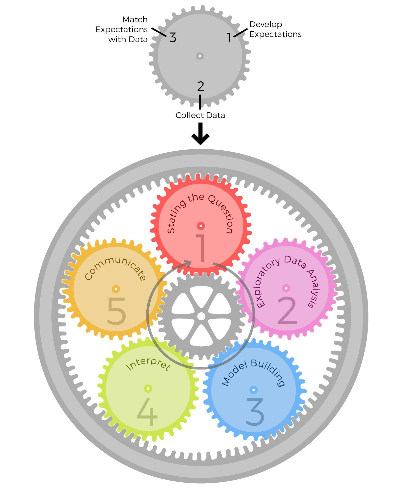

<!DOCTYPE html>
<html lang="en">
  <head>
    <meta charset="utf-8" />
    <meta name="viewport" content="width=device-width, initial-scale=1.0, maximum-scale=1.0, user-scalable=no" />

    <title>A Machine Learning Tour</title>
    <link rel="shortcut icon" href="./favicon.ico" />
    <link rel="stylesheet" href="./dist/reset.css" />
    <link rel="stylesheet" href="./dist/reveal.css" />
    <link rel="stylesheet" href="./dist/theme/black.css" id="theme" />
    <link rel="stylesheet" href="./css/highlight/base16/railscasts.css" />

    <link rel="stylesheet" href="./_assets/./css/common.css" />

  </head>
  <body>
    <div class="reveal">
      <div class="slides"><section  data-markdown><script type="text/template"># A Machine Learning Tutorial

Utensil Song @ 2017-2018

</script></section><section ><section data-markdown><script type="text/template">
### The Origin

</script></section><section data-markdown><script type="text/template">
#### [Wolfram Mathematic](https://www.wolfram.com/mathematica/)  (2000) 


- [My Mathematica Notebooks](https://github.com/utensil/mathematica-notebooks)
  - [DSolve](https://reference.wolfram.com/language/ref/DSolve.html) / [PhysicalSystemData](https://reference.wolfram.com/language/ref/PhysicalSystemData.html) / [Fit](https://reference.wolfram.com/language/ref/Fit.html)
- [Wolfram Alpha Step-by-step Solutions](https://www.wolframalpha.com/examples/pro-features/step-by-step-solutions/)

</script></section><section data-markdown><script type="text/template">
#### First Book on Neural Networks (2002)

[ <!-- .element class="img-450" -->](https://book.douban.com/subject/1115600/)

</script></section><section data-markdown><script type="text/template">
#### [NuPIC](https://github.com/numenta/nupic)[*](https://github.com/numenta/nupic.core/pulls?utf8=%E2%9C%93&q=author%3Autensil)[*](https://github.com/numenta/htm.java/pulls?utf8=%E2%9C%93&q=author%3Autensil) (2014)

- Sparse distributed representations
- Encoders
- Spatial Pooling
- Hierarchical Temporal Memory

<aside class="notes"><ul>
<li><a href="https://numenta.com/resources/biological-and-machine-intelligence/">Biological and Machine Intelligence (BAMI)</a></li>
<li><a href="https://numenta.com/machine-intelligence-technology/htm-studio/">HTM Studio</a></li>
</ul>
</aside></script></section><section data-markdown><script type="text/template">
#### [kaggle: Higgs Boson Machine Learning Challenge](https://www.kaggle.com/c/higgs-boson) (2014)

</script></section><section data-markdown><script type="text/template">
<!-- .slide: data-background-image="https://donsoft.io/intro-to-deeplearning/images/large_hadron_collider.jpg" data-background-interactive style="font-size: 60px"-->

Large Hadron Collider <!-- .element class="fragment" -->

</script></section><section data-markdown><script type="text/template">
<!-- .slide: data-background-image="https://donsoft.io/intro-to-deeplearning/images/higgs_boson.jpg" data-background-interactive style="font-size: 60px"-->

Higgs Boson Detection <!-- .element class="fragment" -->

</script></section><section data-markdown><script type="text/template">
#### Dive in (2016)

<aside class="notes"><ul>
<li><a href="https://www.ranker.com/list/best-artificial-intelligence-movies-list/all-genre-movies-lists">Robot Movies</a><ul>
<li><a href="http://www.artofthetitle.com/title/eva/">http://www.artofthetitle.com/title/eva/</a></li>
</ul>
</li>
<li><a href="https://book.douban.com/subject/3986607/">A SiFi novel about a boy and an android</a> (2000)</li>
<li><a href="https://book.douban.com/subject/1044309/">Amazing Ants</a> (2002)</li>
</ul>
<p>Dive in inclues Julia, Geometric Algebra, Keras and Risk Control.</p>
</aside></script></section></section><section ><section data-markdown><script type="text/template">
### Overview

</script></section><section data-markdown><script type="text/template">
#### Three Types of Machine Learning

 [Python Machine Learning: Chapter 1 by Sebastian Raschka](https://nbviewer.org/github/rasbt/python-machine-learning-book/blob/master/code/ch01/ch01.ipynb)  <!-- .element: class="figcaption" -->

<aside class="notes"><table>
<thead>
<tr>
<th>Supervised Learning</th>
<th>Unsupervised Learning</th>
<th>Reinforcement Learning</th>
</tr>
</thead>
<tbody><tr>
<td></td>
<td></td>
<td></td>
</tr>
</tbody></table>
<p><a href="https://nbviewer.jupyter.org/github/rasbt/python-machine-learning-book/blob/master/code/ch01/ch01.ipynb">Python Machine Learning: Chapter 1 by Sebastian Raschka</a>  <!-- .element: class="figcaption" --></p>
</aside></script></section><section data-markdown><script type="text/template">
#### Supervised Learning

 [Python Machine Learning: Chapter 1 by Sebastian Raschka](https://nbviewer.jupyter.org/github/rasbt/python-machine-learning-book/blob/master/code/ch01/ch01.ipynb)  <!-- .element: class="figcaption" -->

</script></section><section data-markdown><script type="text/template">
#### Supervised Learning (Cont.)

| Classification | Regression |
|---------------------|-----------------------|
|   <!-- .element: class="img-300" -->  |   <!-- .element: class="img-300" --> |

[Python Machine Learning: Chapter 1 by Sebastian Raschka](https://nbviewer.jupyter.org/github/rasbt/python-machine-learning-book/blob/master/code/ch01/ch01.ipynb)  <!-- .element: class="figcaption" -->

</script></section><section data-markdown><script type="text/template">
#### Unsupervised Learning

| Clustering | Dimensionality Reduction |
|---------------------|-----------------------|
|   <!-- .element: class="img-300" -->  |   <!-- .element: class="img-300" --> |

[Python Machine Learning: Chapter 1 by Sebastian Raschka](https://nbviewer.jupyter.org/github/rasbt/python-machine-learning-book/blob/master/code/ch01/ch01.ipynb)  <!-- .element: class="figcaption" -->

<aside class="notes"><p><a href="https://scikit-learn.org/stable/auto_examples/cluster/plot_cluster_comparison.html">https://scikit-learn.org/stable/auto_examples/cluster/plot_cluster_comparison.html</a></p>
</aside></script></section><section data-markdown><script type="text/template">
#### Reinforcement Learning


[Python Machine Learning: Chapter 1 by Sebastian Raschka](https://nbviewer.jupyter.org/github/rasbt/python-machine-learning-book/blob/master/code/ch01/ch01.ipynb)  <!-- .element: class="figcaption" -->

</script></section><section data-markdown><script type="text/template">
<!-- .slide: data-background-iframe="https://www.youtube.com/embed/gn4nRCC9TwQ" data-background-interactive -->

</script></section><section data-markdown><script type="text/template">
#### A roadmap for building machine learning systems


 [Python Machine Learning: Chapter 1 by Sebastian Raschka](https://nbviewer.jupyter.org/github/rasbt/python-machine-learning-book/blob/master/code/ch01/ch01.ipynb)  <!-- .element: class="figcaption" -->

</script></section></section><section ><section data-markdown><script type="text/template">
### Basic Concepts in Data Science

</script></section><section data-markdown><script type="text/template">
#### What is Data Science?

   <!-- .element: class="img-500" --> [DATA SCIENCE & SCIENTISTS](https://science2knowledge.wordpress.com/data-science-scientists/)   <!-- .element: class="figcaption" -->

</script></section><section data-markdown><script type="text/template">
#### Epicycles of Analysis <!-- .element: style="font-size: 42px" -->

   <!-- .element: class="img-550" -->  [DATA SCIENCE & SCIENTISTS](https://science2knowledge.wordpress.com/data-science-scientists/)   <!-- .element: class="figcaption" -->

<aside class="notes"><ul>
<li>Stating and refining the question</li>
<li>Exploring the data</li>
<li>Building formal statistical models</li>
<li>Interpreting the results</li>
<li>Communicating the results</li>
</ul>
<p><a href="https://gohighbrow.com/the-data-analysis-epicycle/">https://gohighbrow.com/the-data-analysis-epicycle/</a>
<a href="https://bookdown.org/rdpeng/artofdatascience/epicycle-of-analysis.html">https://bookdown.org/rdpeng/artofdatascience/epicycle-of-analysis.html</a></p>
<p> <a href="https://gohighbrow.com/the-data-analysis-epicycle/">The Data Analysis Epicycle</a>  <!-- .element: class="figcaption" --></p>
</aside></script></section><section data-markdown><script type="text/template">
#### Six Types of Analyses

- Descriptive
- Exploratory
- Inferential
- Predictive
- Causal
- Mechanistic

<div style="float: right;width: 70%;">

[Course Introduction - Advanced Data Science by Jeff Leek](https://jtleek.com/advdatasci/slides/01-introduction-slides.html#38)  <!-- .element: class="figcaption" -->

<iframe src="https://jtleek.com/advdatasci/slides/01-introduction-slides.html#38" />
</div>

<aside class="notes"><p><a href="https://bookdown.org/rdpeng/artofdatascience/types-of-questions.html">https://bookdown.org/rdpeng/artofdatascience/types-of-questions.html</a>
<a href="https://datascientistinsights.com/2013/01/29/six-types-of-analyses-every-data-scientist-should-know/">https://datascientistinsights.com/2013/01/29/six-types-of-analyses-every-data-scientist-should-know/</a>
<a href="https://www.coursera.org/specializations/jhu-data-science">https://www.coursera.org/specializations/jhu-data-science</a>
<a href="https://www.pinterest.com.au/pin/572520171368225895/">https://www.pinterest.com.au/pin/572520171368225895/</a>
<a href="http://www.caperay.com/blog/index.php/2015/ask-the-right-questions/">http://www.caperay.com/blog/index.php/2015/ask-the-right-questions/</a></p>
</aside></script></section><section data-markdown><script type="text/template">
<!-- .slide: style="font-size: 14px" -->

#### Confusion Matrix <!-- .element: style="font-size: 42px" -->

<table class="wikitable" align="center" style="text-align:center; border:none; background:transparent;color: black">
<tbody><tr>
<td style="border:none;" colspan="2"></td>
<td style="background:#eeeebb;" colspan="2"><b>True condition</b></td>
</tr>
<tr>
<td style="border:none;"></td>
<td style="background:#dddddd;"><a href="https://en.wikipedia.org/wiki/Statistical_population" title="Statistical population">Total population</a></td>
<td style="background:#ffffcc;">Condition positive</td>
<td style="background:#ddddaa;">Condition negative</td>
<td style="background:#eeeecc;font-size:90%;"><a href="https://en.wikipedia.org/wiki//Prevalence" title="Prevalence">Prevalence</a> <span style="font-size:118%;white-space:nowrap;">= <span class="sfrac nowrap" style="display:inline-block; vertical-align:-0.5em; font-size:85%; text-align:center;"><span style="display:block; line-height:1em; margin:0 0.1em;">Σ&nbsp;Condition positive</span><span style="display:block; line-height:1em; margin:0 0.1em; border-top:1px solid;">Σ&nbsp;Total population</span></span></span></td>
<td style="background:#cceecc;border-left:double silver;font-size:90%;" colspan="2"><a href="https://en.wikipedia.org/wiki/Accuracy_and_precision" title="Accuracy and precision">Accuracy</a> (ACC) = <span style="font-size:118%;"><span class="sfrac nowrap" style="display:inline-block; vertical-align:-0.5em; font-size:85%; text-align:center;"><span style="display:block; line-height:1em; margin:0 0.1em;">Σ&nbsp;True positive + Σ True negative</span><span style="display:block; line-height:1em; margin:0 0.1em; border-top:1px solid;">Σ&nbsp;Total population</span></span></span></td>
</tr>
<tr>
<td style="background:#bbeeee;" rowspan="2"><b>Predicted<br>
condition</b></td>
<td style="background:#ccffff;">Predicted condition<br>
positive</td>
<td style="background:#ccffcc;"><span style="color:#006600;"><b><a href="https://en.wikipedia.org/wiki/True_positive" class="mw-redirect" title="True positive">True positive</a></b>,<br>
<a href="https://en.wikipedia.org/wiki/Statistical_power" title="Statistical power">Power</a></span></td>
<td style="background:#eedddd;"><span style="color:#cc0000;"><b><a href="https://en.wikipedia.org/wiki/False_positive" class="mw-redirect" title="False positive">False positive</a></b>,<br>
<a href="https://en.wikipedia.org/wiki/Type_I_error" class="mw-redirect" title="Type I error">Type I error</a></span></td>
<td style="background:#ccffee;border-top:double silver;font-size:90%;"><a href="https://en.wikipedia.org/wiki/Positive_predictive_value" class="mw-redirect" title="Positive predictive value">Positive predictive value</a> (PPV), <a href="https://en.wikipedia.org/wiki/Precision_(information_retrieval)" class="mw-redirect" title="Precision (information retrieval)">Precision</a> = <span style="font-size:118%;white-space:nowrap;"><span class="sfrac nowrap" style="display:inline-block; vertical-align:-0.5em; font-size:85%; text-align:center;"><span style="display:block; line-height:1em; margin:0 0.1em;">Σ True positive</span><span style="display:block; line-height:1em; margin:0 0.1em; border-top:1px solid;">Σ&nbsp;Predicted&nbsp;condition&nbsp;positive</span></span></span></td>
<td style="background:#cceeff;border-top:double silver;font-size:90%;" colspan="2"><a href="https://en.wikipedia.org/wiki/False_discovery_rate" title="False discovery rate">False discovery rate</a> (FDR) = <span style="font-size:118%;white-space:nowrap;"><span class="sfrac nowrap" style="display:inline-block; vertical-align:-0.5em; font-size:85%; text-align:center;"><span style="display:block; line-height:1em; margin:0 0.1em;">Σ False positive</span><span style="display:block; line-height:1em; margin:0 0.1em; border-top:1px solid;">Σ&nbsp;Predicted&nbsp;condition&nbsp;positive</span></span></span></td>
</tr>
<tr>
<td style="background:#aadddd;">Predicted condition<br>
negative</td>
<td style="background:#ffdddd;"><span style="color:#cc0000;"><b><a href="https://en.wikipedia.org/wiki/False_negative" class="mw-redirect" title="False negative">False negative</a></b>,<br>
<a href="https://en.wikipedia.org/wiki/Type_II_error" class="mw-redirect" title="Type II error">Type II error</a></span></td>
<td style="background:#bbeebb;"><span style="color:#006600;"><b><a href="https://en.wikipedia.org/wiki/True_negative" class="mw-redirect" title="True negative">True negative</a></b></span></td>
<td style="background:#eeddee;border-bottom:double silver;font-size:90%;"><a href="https://en.wikipedia.org/wiki/False_omission_rate" class="mw-redirect" title="False omission rate">False omission rate</a> (FOR) = <span style="font-size:118%;white-space:nowrap;"><span class="sfrac nowrap" style="display:inline-block; vertical-align:-0.5em; font-size:85%; text-align:center;"><span style="display:block; line-height:1em; margin:0 0.1em;">Σ False negative</span><span style="display:block; line-height:1em; margin:0 0.1em; border-top:1px solid;">Σ&nbsp;Predicted&nbsp;condition&nbsp;negative</span></span></span></td>
<td style="background:#aaddcc;border-bottom:double silver;font-size:90%;" colspan="2"><a href="https://en.wikipedia.org/wiki/Negative_predictive_value" class="mw-redirect" title="Negative predictive value">Negative predictive value</a> (NPV) = <span style="font-size:118%;white-space:nowrap;"><span class="sfrac nowrap" style="display:inline-block; vertical-align:-0.5em; font-size:85%; text-align:center;"><span style="display:block; line-height:1em; margin:0 0.1em;">Σ True negative</span><span style="display:block; line-height:1em; margin:0 0.1em; border-top:1px solid;">Σ&nbsp;Predicted&nbsp;condition&nbsp;negative</span></span></span></td>
</tr>
<tr style="font-size:90%;">
<td style="border:none;vertical-align:bottom;padding:0 2px 0 0;color:#999999;" colspan="2" rowspan="2">Click thumbnail for interactive chart:
<div class="noresize" style="height: 105px; width: 210px; "><a href="http://upload.wikimedia.org/wikipedia/commons/0/0e/DiagnosticTesting_Diagram.svg" class="plainlinks" rel="nofollow" title="Click for interactive SVG chart"></a>
</div>
</td>
<td style="background:#eeffcc;"><a href="https://en.wikipedia.org/wiki/True_positive_rate" class="mw-redirect" title="True positive rate">True positive rate</a> (TPR), <a href="https://en.wikipedia.org/wiki/Recall_(information_retrieval)" class="mw-redirect" title="Recall (information retrieval)">Recall</a>, <a href="https://en.wikipedia.org/wiki/Sensitivity_(tests)" class="mw-redirect" title="Sensitivity (tests)">Sensitivity</a>, probability&nbsp;of&nbsp;detection <span style="font-size:118%;white-space:nowrap;">= <span class="sfrac nowrap" style="display:inline-block; vertical-align:-0.5em; font-size:85%; text-align:center;"><span style="display:block; line-height:1em; margin:0 0.1em;">Σ True positive</span><span style="display:block; line-height:1em; margin:0 0.1em; margin-bottom: 0.4em;border-top:1px solid;">Σ&nbsp;Condition&nbsp;positive</span></span></span></td>
<td style="background:#eeddbb;"><a href="https://en.wikipedia.org/wiki/False_positive_rate" title="False positive rate">False positive rate</a> (FPR), <a href="https://en.wikipedia.org/wiki/Information_retrieval" title="Information retrieval"><span class="nowrap">Fall-out</span></a>, probability&nbsp;of&nbsp;false&nbsp;alarm <span style="font-size:118%;white-space:nowrap;">= <span class="sfrac nowrap" style="display:inline-block; vertical-align:-0.5em; font-size:85%; text-align:center;"><span style="display:block; line-height:1em; margin:0 0.1em;">Σ False positive</span><span style="display:block; line-height:1em; margin:0 0.1em; border-top:1px solid;">Σ&nbsp;Condition&nbsp;negative</span></span></span></td>
<td style="background:#eeeeee;"><a href="https://en.wikipedia.org/wiki/Positive_likelihood_ratio" class="mw-redirect" title="Positive likelihood ratio">Positive likelihood ratio</a> <span class="nowrap">(LR+)</span> <span style="font-size:118%;white-space:nowrap;">= <span class="sfrac nowrap" style="display:inline-block; vertical-align:-0.5em; font-size:85%; text-align:center;"><span style="display:block; line-height:1em; margin:0 0.1em;">TPR</span><span style="display:block; line-height:1em; margin:0 0.1em; border-top:1px solid;">FPR</span></span></span></td>
<td style="background:#dddddd;" rowspan="2"><a href="https://en.wikipedia.org/wiki/Diagnostic_odds_ratio" title="Diagnostic odds ratio">Diagnostic odds ratio</a> (DOR) <span style="font-size:118%;white-space:nowrap;">= <span class="sfrac nowrap" style="display:inline-block; vertical-align:-0.5em; font-size:85%; text-align:center;"><span style="display:block; line-height:1em; margin:0 0.1em;">LR+</span><span style="display:block; line-height:1em; margin:0 0.1em; border-top:1px solid;">LR−</span></span></span></td>
<td style="background:#ddffdd;border-left:double silver;line-height:2;" rowspan="2"><a href="https://en.wikipedia.org/wiki/F1_score" title="F1 score">F<sub>1</sub> score</a> = <span style="font-size:118%;white-space:nowrap;"><span class="sfrac nowrap" style="display:inline-block; vertical-align:-0.5em; font-size:85%; text-align:center;"><span style="display:block; line-height:1em; margin:0 0.1em;">2</span><span style="display:block; line-height:1em; margin:0 0.1em; border-top:1px solid;"><span class="sfrac nowrap" style="display:inline-block; vertical-align:-0.5em; font-size:85%; text-align:center;"><span style="display:block; line-height:1em; margin:0 0.1em;">1</span><span style="display:block; line-height:1em; margin:0 0.1em; border-top:1px solid;">Recall</span></span>&nbsp;+&nbsp;<span class="sfrac nowrap" style="display:inline-block; vertical-align:-0.5em; font-size:85%; text-align:center;"><span style="display:block; line-height:1em; margin:0 0.1em;">1</span><span style="display:block; line-height:1em; margin:0 0.1em; border-top:1px solid;">Precision</span></span></span></span></span></td>
</tr>
<tr style="font-size:90%;">
<td style="background:#ffeecc;"><a href="https://en.wikipedia.org/wiki/False_negative_rate" class="mw-redirect" title="False negative rate">False negative rate</a> (FNR), Miss&nbsp;rate <span style="font-size:118%;white-space:nowrap;">= <span class="sfrac nowrap" style="display:inline-block; vertical-align:-0.5em; font-size:85%; text-align:center;"><span style="display:block; line-height:1em; margin:0 0.1em;">Σ False negative</span><span style="display:block; line-height:1em; margin:0 0.1em; border-top:1px solid;">Σ&nbsp;Condition&nbsp;positive</span></span></span></td>
<td style="background:#ddeebb;"><a href="https://en.wikipedia.org/wiki/True_negative_rate" class="mw-redirect" title="True negative rate">True negative rate</a> (TNR), <a href="https://en.wikipedia.org/wiki/Specificity_(tests)" class="mw-redirect" title="Specificity (tests)">Specificity</a> (SPC) <span style="font-size:118%;white-space:nowrap;">= <span class="sfrac nowrap" style="display:inline-block; vertical-align:-0.5em; font-size:85%; text-align:center;"><span style="display:block; line-height:1em; margin:0 0.1em;">Σ True negative</span><span style="display:block; line-height:1em; margin:0 0.1em; border-top:1px solid;">Σ&nbsp;Condition&nbsp;negative</span></span></span></td>
<td style="background:#cccccc;"><a href="https://en.wikipedia.org/wiki/Negative_likelihood_ratio" class="mw-redirect" title="Negative likelihood ratio">Negative likelihood ratio</a> <span class="nowrap">(LR−)</span> <span style="font-size:118%;white-space:nowrap;">= <span class="sfrac nowrap" style="display:inline-block; vertical-align:-0.5em; font-size:85%; text-align:center;"><span style="display:block; line-height:1em; margin:0 0.1em;">FNR</span><span style="display:block; line-height:1em; margin:0 0.1em; border-top:1px solid;">TNR</span></span></span></td>
</tr>
</tbody></table>

[Wikipedia: Sensitivity and specificity](https://en.wikipedia.org/wiki/Sensitivity_and_specificity) <!-- .element: class="figcaption" -->

</script></section><section data-markdown><script type="text/template">
<!-- .slide: style="font-size: 28px" -->

#### Confusion Matrix (Simplified)

|  Term              |            Formula                                                                               |         Focus        |
|--------------------|:------------------------------------------------------------------------------------------------:|----------------------|
| Accuracy           | $ \frac{\color{green}{✔} + \color{red}{✖}}{\text{All}(\color{green}{✔}+\color{green}{✖}+\color{red}{✔}+\color{red}{✖})} $                           | Right                |
| Precision          | $ \frac{\color{green}{✔}}{\text{All Positive}(\color{green}{✔}+\color{red}{✔})} $             | Right about Positive |
| Sensitivity/Recall | $ \frac{\color{green}{✔}}{\text{All Real}(\color{green}{✔}+\color{green}{✖})} $               | Right about Real     |
| Specificity        | $ \frac{\color{red}{✖}}{\text{All NOT Real}(\color{red}{✔}+\color{red}{✖})} $                 | Right about NOT Real |

| Legend    |                             |                               |
|-----------|-----------------------------|-------------------------------|
| Actual    | $ \color{green}{●} $ Real | $ \color{red}{●} $ NOT Real |
| Predicted | ✔ Positive                  | ✖ Negative                   |

<aside class="notes"><table>
<thead>
<tr>
<th>Term</th>
<th align="center">Formula</th>
<th>Focus</th>
</tr>
</thead>
<tbody><tr>
<td>Accuracy</td>
<td align="center">$ \frac{(\text{True Positive} + \text{True Negative})}{\text{All}} $</td>
<td>Right</td>
</tr>
<tr>
<td>Precision</td>
<td align="center">$ \frac{\text{True Positive}}{\text{All Positive}} $</td>
<td>Right about Positive</td>
</tr>
<tr>
<td>Sensitivity/Recall</td>
<td align="center">$ \frac{\text{True Positive}}{\text{All Real (= True Positive + False Negative)}} $</td>
<td>Right about Real</td>
</tr>
<tr>
<td>Specificity</td>
<td align="center">$ \frac{\text{True Negative}}{\text{All NOT Real (= True Negative + False Positive)}} $</td>
<td>Right about NOT Real</td>
</tr>
</tbody></table>
</aside></script></section></section><section ><section data-markdown><script type="text/template">## Traditional Machine Learning Methods

<aside class="notes"><p><a href="http://detexify.kirelabs.org/classify.html">http://detexify.kirelabs.org/classify.html</a>
<a href="http://shapecatcher.com/">http://shapecatcher.com/</a>
<a href="https://math.meta.stackexchange.com/questions/5020/mathjax-basic-tutorial-and-quick-reference">https://math.meta.stackexchange.com/questions/5020/mathjax-basic-tutorial-and-quick-reference</a></p>
<p><a href="https://towardsdatascience.com/machine-learning-quick-reference-card-cf92f6accd08">https://towardsdatascience.com/machine-learning-quick-reference-card-cf92f6accd08</a>
<a href="https://www.analyticsvidhya.com/blog/2017/09/common-machine-learning-algorithms/">Essentials of Machine Learning Algorithms with Python and R Codes</a>
<a href="https://www.kdnuggets.com/2016/08/10-algorithms-machine-learning-engineers.html"> The 10 Algorithms Machine Learning Engineers Need to Know</a></p>
</aside></script></section><section data-markdown><script type="text/template">
<!-- .slide: data-background-image="https://scikit-learn.org/dev/_static/ml_map.png" data-background-size="contain" -->

</script></section><section data-markdown><script type="text/template">
<!-- .slide: data-background-image="images/ml_guide.svg" data-background-size="contain" -->

<aside class="notes"><p>The image is from <a href="http://dlib.net/ml_guide.svg">http://dlib.net/ml_guide.svg</a> .</p>
</aside></script></section></section><section ><section data-markdown><script type="text/template">
### Linear Regression

</script></section><section data-markdown><script type="text/template">
#### Elements of Linear Relationships

  <!-- .element: class="img-450" --> [Python Machine Learning: Chapter 10 by Sebastian Raschka](http://nbviewer.jupyter.org/github/rasbt/python-machine-learning-book/blob/master/code/ch10/ch10.ipynb)  <!-- .element: class="figcaption" -->

<aside class="notes"><p><a href="https://rasbt.github.io/mlxtend/user_guide/regressor/LinearRegression/">https://rasbt.github.io/mlxtend/user_guide/regressor/LinearRegression/</a></p>
<p><a href="https://sebastianraschka.com/faq/docs/closed-form-vs-gd.html">Machine Learning FAQ by Sebastian Raschka</a></p>
<p> <a href="https://xkcd.com/1725/">xkcd: Linear Regression</a>  <!-- .element: class="figcaption" --></p>
</aside></script></section><section data-markdown><script type="text/template">
#### Assumption $$ y_i = \beta_0 + \beta x_i + \varepsilon $$ 

   <!-- .element: class="img-450" --> [ by Department of Statistics, ITS Surabaya](https://www.slideshare.net/dessybudiyanti/simple-linier-regression)  <!-- .element: class="figcaption" -->

</script></section><section data-markdown><script type="text/template">
#### Linear Model in Matrix Form

$$ \boldsymbol{\hat{y}} = X \boldsymbol{w} + \boldsymbol{b} $$

For $p$ features and $n$ samples: <!-- .element: style="font-size: 24px" -->

$$ \left(
  \begin{array}{c}
    \hat{y}_1 \cr
    \vdots \cr
    \hat{y}_n
  \end{array}
\right)
= \left(
  \begin{array}{c}
    \mathbf{x}^\top_1 \cr
    \vdots \cr
    \mathbf{x}^\top_n
  \end{array}
\right) \left(
  \begin{array}{c}
    w_1 \cr
    \vdots \cr
    w_p
  \end{array}
\right) + b $$ <!-- .element: class="" style="font-size: smaller" --> 

$$ = \left(
  \begin{array}{cccc}
    1 & x_{11} & \ldots & x_{1p} \cr
    1 & \vdots & \ddots & \vdots \cr
    1 & x_{n1} & \ldots & x_{np}
  \end{array}
\right) \left(
  \begin{array}{c}
    w_0 \\
    \vdots \\
    w_p
  \end{array}
\right) $$ <!-- .element: class="fragment" style="font-size: smaller" -->

<aside class="notes"><p><a href="https://en.wikipedia.org/wiki/Linear_regression">https://en.wikipedia.org/wiki/Linear_regression</a></p>
</aside></script></section><section data-markdown><script type="text/template">
#### Bias trick

 [CS231n Convolutional Neural Networks for Visual Recognition: Linear classification](https://cs231n.github.io/linear-classify/)  <!-- .element: class="figcaption" -->

</script></section><section data-markdown><script type="text/template">
### The Objective


$$ \underset{x \in D}{\operatorname{arg min}} f(x) :=  \\{ x \mid \forall y \in D : f(y) \ge f(x)  \\} $$

<aside class="notes"><ul>
<li><a href="https://en.wikipedia.org/wiki/Arg_max">https://en.wikipedia.org/wiki/Arg_max</a></li>
<li><a href="https://www.cs.ubc.ca/~schmidtm/Documents/2016_540_Argmax.pdf">Argmax and Max Calculus</a> </li>
<li><a href="https://tex.stackexchange.com/questions/5223/command-for-argmin-or-argmax">https://tex.stackexchange.com/questions/5223/command-for-argmin-or-argmax</a></li>
<li><a href="https://en.wikibooks.org/wiki/LaTeX/Advanced_Mathematics">https://en.wikibooks.org/wiki/LaTeX/Advanced_Mathematics</a></li>
<li><a href="https://raw.githubusercontent.com/scikit-learn/scikit-learn/master/doc/modules/linear_model.rst">https://raw.githubusercontent.com/scikit-learn/scikit-learn/master/doc/modules/linear_model.rst</a></li>
</ul>
</aside></script></section><section data-markdown><script type="text/template">
#### Ordinary Least Squares

 [Linear regression from scratch](http://gluon.ai/chapter_linear-regression/linear-regression.html#equation-eq-mse) <!-- .element: class="figcaption" -->

$$
\underset{\boldsymbol{w}}{\operatorname{arg min}} \xi(\hat{y}, y) = \ell_2(\hat{y}, y) \\\\
= {|| \hat{y} - y||_2}^2 = {|| X \boldsymbol{w} - \boldsymbol{y}||_2}^2 $$

<aside class="notes"><p><a href="https://image.slidesharecdn.com/simplelinearregressionfinal-121101072438-phpapp02/95/simple-linear-regression-final-8-638.jpg?cb=1507030484">https://image.slidesharecdn.com/simplelinearregressionfinal-121101072438-phpapp02/95/simple-linear-regression-final-8-638.jpg?cb=1507030484</a></p>
<p><a href="https://www.slideshare.net/harshupadhyay/simple-linear-regression-final?next_slideshow=1">https://www.slideshare.net/harshupadhyay/simple-linear-regression-final?next_slideshow=1</a></p>
<p><a href="https://www.jianshu.com/p/f71848c7aaf3">https://www.jianshu.com/p/f71848c7aaf3</a></p>
<p>Terms related to OLS</p>
<ul>
<li>Ordinary Least Squares (OLS)</li>
<li>Least Squares Estimator (LSE)</li>
<li>Sum of Squared Errors (SSE)</li>
<li>Mean Squared Error (MSE)</li>
</ul>
<p><a href="http://www.hlt.utdallas.edu/~vgogate/ml/2015s/lectures.html">Lecture Slides (Machine Learning, CS 6375)</a></p>
</aside></script></section><section data-markdown><script type="text/template">
#### Empirical Risk Minimization (ERM)

 <!-- .element: class="img-500" --> [Machine Learning 10-701/15-781, Fall 2010 Lecture 6: Linear Regression](http://www.cs.cmu.edu/~aarti/Class/10701/slides/Lecture6.pdf) <!-- .element: class="figcaption" -->

</script></section><section data-markdown><script type="text/template">
#### Bayes’ Theorem

 <!-- .element: style="width: 50%" --> [Frequentist And Bayesian Approaches In Statistics](https://www.probabilisticworld.com/frequentist-bayesian-approaches-inferential-statistics/) <!-- .element: class="figcaption" -->

 <!-- .element: style="width: 50%" --> [Calculating Coin Bias With Bayes’ Theorem](https://www.probabilisticworld.com/calculating-coin-bias-bayes-theorem/) <!-- .element: class="figcaption" -->

<aside class="notes"><p><a href="https://medium.com/data-science-group-iitr/naive-bayes-unfolded-b2ab036b42b1">https://medium.com/data-science-group-iitr/naive-bayes-unfolded-b2ab036b42b1</a>
<a href="https://www.explainxkcd.com/wiki/index.php/795:_Conditional_Risk">https://www.explainxkcd.com/wiki/index.php/795:_Conditional_Risk</a>
<a href="https://betterexplained.com/articles/an-intuitive-and-short-explanation-of-bayes-theorem/">https://betterexplained.com/articles/an-intuitive-and-short-explanation-of-bayes-theorem/</a></p>
<p><a href="https://qph.ec.quoracdn.net/main-qimg-18b90ce3920e0913240c0b5b584e4d19.webp">https://qph.ec.quoracdn.net/main-qimg-18b90ce3920e0913240c0b5b584e4d19.webp</a>
<a href="https://www.quora.com/Do-extraordinary-claims-require-extraordinary-evidence">https://www.quora.com/Do-extraordinary-claims-require-extraordinary-evidence</a></p>
<p><a href="http://www.labtimes.org/labtimes/method/methods/img/2011_04b.jpg">http://www.labtimes.org/labtimes/method/methods/img/2011_04b.jpg</a>
<a href="http://www.labtimes.org/labtimes/method/methods/2011_04.lasso">http://www.labtimes.org/labtimes/method/methods/2011_04.lasso</a></p>
<p>  <!-- .element: class="img-450" --></p>
<p><a href="http://gandenberger.org/2014/07/28/intro-to-statistical-methods-2/">An Introduction to Likelihoodist, Bayesian, and Frequentist Methods</a>  <!-- .element: class="figcaption" --></p>
</aside></script></section><section data-markdown><script type="text/template">
#### MLE v.s. MAP

 <!-- .element: class="img-450" --> [Machine Learning 10-701/15-781, Fall 2010 Lecture 2](http://www.cs.cmu.edu/~aarti/Class/10701/slides/Lecture2.pdf) <!-- .element: class="figcaption" -->

Maximum Likelihood Estimation v.s. Maximum A Posteriori Estimation  <!-- .element: style="font-size: 24px" -->

[MLE v.s. MAP in ML](https://zhuanlan.zhihu.com/p/32480810) <!-- .element: class="figcaption see-also" -->

</script></section><section data-markdown><script type="text/template">
#### M(C)LE v.s. M(C)AP

 <!-- .element: class="img-500" --> [Machine Learning 10-701/15-781, Fall 2010 Lecture 2](http://www.cs.cmu.edu/~aarti/Class/10701/slides/Lecture2.pdf) <!-- .element: class="figcaption" -->

</script></section><section data-markdown><script type="text/template">
#### Least Squares and MLE

 <!-- .element: class="img-450" --> [Machine Learning 10-701/15-781, Fall 2010 Lecture 6: Linear Regression](http://www.cs.cmu.edu/~aarti/Class/10701/slides/Lecture6.pdf) <!-- .element: class="figcaption" -->

Least Square Estimate = Maximum Likelihood Estimate under a Gaussian model. <!-- .element: style="font-size: 24px" -->

<aside class="notes"><p>Maximum A Posteriori Estimation</p>
<p><a href="http://www.cs.cmu.edu/~aarti/Class/10701/slides/Lecture2.pdf">http://www.cs.cmu.edu/~aarti/Class/10701/slides/Lecture2.pdf</a></p>
</aside></script></section><section data-markdown><script type="text/template">
#### Implementing Linear Regression

<!-- .slide: style="font-size: 32px;" -->

```python
def nn(x, w):
    return x * w
def cost(y, t):
    return ((y - t)**2).sum()

nb_of_samples = 20
x = np.random.uniform(0, 1, nb_of_samples)
t = 3 * x + np.random.normal(0, 0.2, nb_of_samples)

# And then...
```

<p class="fragment current-only" data-code-focus="1-2">
  $ \boldsymbol{\hat{y}} = X \boldsymbol{w} $
</p>
<p class="fragment current-only" data-code-focus="3-4">
  $ \underset{\boldsymbol{w}}{\operatorname{arg\,min}} \, \xi(\hat{y}, t) = {|| \hat{y} - t||_2}^2 $
</p>
<p class="fragment current-only" data-code-focus="6-8" style="font-size: 24px">
  $$
    x \sim {\mathcal {U}}(0, 1) \\
    t = 3 x + \varepsilon \\
    \varepsilon \sim N(\mu, \sigma^2) \; \text{with} \; \mu = 0, \sigma = 0.2
  $$
</p>
<p class="fragment current-only" data-code-focus="10" style="">
  How to optimize?
</p>
</script></section></section><section ><section data-markdown><script type="text/template">
### Optimization Methods

</script></section><section data-markdown><script type="text/template">
#### Coordinate Descent

 <!-- .element: style="height: 300px; background-color: white" --> [Gradient Descent and Variants - Convergence Rate Summary](https://hduongtrong.github.io/2015/11/23/coordinate-descent/)  <!-- .element: class="figcaption" -->

$$
  w_{k+1} \gets w_k - \alpha_k \nabla_{i_k} F(w_k) e_{i_k}
$$

$$
  \ \ \text{where}\ \ \nabla_{i_k} F(w_k) := \frac{\partial F}{\partial w^{i_k}}(w_k)
$$ <!-- .element: class="fragment" style="font-size: smaller" -->

<aside class="notes"><p>$$ \underset{w}{\operatorname{arg min}} , F : \mathbb{R}^{d} \to \mathbb{R} $$</p>
<p>$w^{i_k}$ represents the $i_k$-th element of the parameter vector, and $e_{i_k}$ represents the $i_k$-th coordinate vector for some $i_k \in {1,\dots,d}$.  In other words, the solution estimates $w_{k+1}$ and $w_k$ differ only in their $i_k$-th element as a result of a move in the $i_k$-th coordinate from $w_k$.</p>
</aside></script></section><section data-markdown><script type="text/template">
#### Gradient Descent (GD)

   <!-- .element: class="img-300" --> [Machine Learning FAQ by Sebastian Raschka](https://sebastianraschka.com/faq/docs/closed-form-vs-gd.html)   <!-- .element: class="figcaption" -->

$$
\text{Stochastic: }\quad w_{k+1} \gets w_k - \alpha_k \nabla f_{i_k}(w_k)
$$

$$
\text{Batch: }\quad  w_{k+1} \gets w_k - \frac{\alpha_k}{n} \sum_{i=1}^n \nabla f_i(w_k)
$$

</script></section><section data-markdown><script type="text/template">
#### Implementing Linear Regression with GD

<!-- .slide: style="font-size: 32px;" -->

```python
def nn(x, w): return x * w
def cost(y, t): return ((y - t)**2).sum()
nb_of_samples = 20
x = np.random.uniform(0, 1, nb_of_samples)
t = 3 * x + np.random.normal(0, 0.2, nb_of_samples)

def gradient(w, x, t): return 2 * (nn(x, w) - t) * x
def delta_w(w, x, t, learning_rate):
    return learning_rate * gradient(w, x, t).sum()

w = 0.1; learning_rate = 0.1; nb_of_iterations = 10;
w_cost = [(w, cost(nn(x, w), t))]
for i in range(nb_of_iterations):
    w = w - delta_w(w, x, t, learning_rate)
    w_cost.append((w, cost(nn(x, w), t)))
```

<p class="fragment current-only" data-code-focus="1">
  $ \boldsymbol{\hat{y}} = X \boldsymbol{w} $
</p>
<p class="fragment current-only" data-code-focus="2">
  $ \underset{\boldsymbol{w}}{\operatorname{arg\,min}} \, \xi(\hat{y}, t) = {|| \hat{y} - t||_2}^2 $
</p>
<p class="fragment current-only" data-code-focus="3-5" style="font-size: 24px">
  $$
    x \sim {\mathcal {U}}(0, 1) \\
    t = 3 x + \varepsilon \\
    \varepsilon \sim N(\mu, \sigma^2) \; \text{with} \; \mu = 0, \sigma = 0.2
  $$
</p>
<p class="fragment current-only" data-code-focus="7" style="font-size: 24px">
  $$
      \frac{\partial \xi(\hat{y}, t)}{\partial w} = \frac{\partial \xi}{\partial \hat{y}} \frac{\partial \hat{y}}{\partial w}
    = \frac{\partial (\hat{y} - t)^2}{\partial \hat{y}} \frac{\partial (x w)}{\partial w} \\
    = 2 (\hat{y} - t) x = 2 (x w - t) x
  $$
</p>
<p class="fragment current-only" data-code-focus="8-9" style="font-size: 24px">
  $$
    \Delta w = \mu \sum_{i=1}^{N} \frac{\partial \xi_i(\hat{y}_i, t_i)}{\partial w}
  $$
</p>
<p class="fragment current-only" data-code-focus="11-15" style="">
  $$
    w_{k+1} \gets w_k - \alpha_k \Delta w
  $$
</p>

</script></section><section data-markdown><script type="text/template">
<!-- .slide: data-background-iframe="http://nbviewer.jupyter.org/github/peterroelants/peterroelants.github.io/blob/master/notebooks/neural_net_implementation/neural_network_implementation_part01.ipynb" data-background-interactive -->

</script></section><section data-markdown><script type="text/template">
#### Beyond SGD: Noise Reduction and Second-Order Methods

 <!-- .element: style="height: 300px" -->

[Optimization Methods for Large-Scale Machine Learning](https://arxiv.org/pdf/1606.04838.pdf) <!-- .element: class="figcaption" -->

</script></section><section data-markdown><script type="text/template">
<!-- .slide: data-background-iframe="https://distill.pub/2017/momentum/" data-background-interactive -->

</script></section><section data-markdown><script type="text/template">
#### Nesterov Momentum

 [CS231n Neural Networks Part 3: Learning and Evaluation](https://cs231n.github.io/neural-networks-3/)  <!-- .element: class="figcaption" -->

</script></section><section data-markdown><script type="text/template">
#### Adam = SDG + Adaptive + Momentum

* [SGD → SGD-M → NAG → AdaGrad → AdaDelta/RMSProp → Adam → Nadam](https://zhuanlan.zhihu.com/p/32230623)
* [Why not just use Adam?](https://zhuanlan.zhihu.com/p/32262540)
* [Adam → SGD](https://zhuanlan.zhihu.com/p/32338983)

</script></section><section data-markdown><script type="text/template">
#### GD Optimization Algorithms: Noisy Moons

 [Alec Radford](https://www.reddit.com/r/MachineLearning/comments/2gopfa/visualizing_gradient_optimization_techniques/cklhott/
)  <!-- .element: class="figcaption" -->

<aside class="notes"><p>Comparison of a few optimization methods (animation by Alec Radford). The star denotes the global minimum on the error surface. Notice that stochastic gradient descent (SGD) without momentum is the slowest method to converge in this example.</p>
<p><a href="https://danielnouri.org/notes/category/machine-learning/#testing-it-out">Using convolutional neural nets to detect facial keypoints tutorial</a>
<a href="https://hduongtrong.github.io/2015/11/23/coordinate-descent/">Gradient Descent and Variants - Convergence Rate Summary</a>
<a href="https://en.wikipedia.org/wiki/Test_functions_for_optimization"><strong>Test functions for optimization</strong></a></p>
<p>NAG: Nesterov’s accelerated gradient.</p>
</aside></script></section><section data-markdown><script type="text/template">
#### GD Optimization Algorithms: Long Valley

 [Alec Radford: Visualizing Optimization Algorithms](https://imgur.com/a/Hqolp) <!-- .element: class="figcaption" -->

<aside class="notes"><p>Algos without scaling based on gradient information really struggle to break symmetry here - SGD gets no where and Nesterov Accelerated Gradient / Momentum exhibits oscillations until they build up velocity in the optimization direction.</p>
<p>Algos that scale step size based on the gradient quickly break symmetry and begin descent.</p>
<p><a href="http://ruder.io/optimizing-gradient-descent/">http://ruder.io/optimizing-gradient-descent/</a>
<a href="http://cs231n.github.io/neural-networks-3/">http://cs231n.github.io/neural-networks-3/</a>
<a href="http://www.cs.toronto.edu/~tijmen/csc321/slides/lecture_slides_lec6.pdf">http://www.cs.toronto.edu/~tijmen/csc321/slides/lecture_slides_lec6.pdf</a>
<a href="https://www.quora.com/What-are-differences-between-update-rules-like-AdaDelta-RMSProp-AdaGrad-and-AdaM">https://www.quora.com/What-are-differences-between-update-rules-like-AdaDelta-RMSProp-AdaGrad-and-AdaM</a>
<a href="https://github.com/robertsdionne/bouncingball">https://github.com/robertsdionne/bouncingball</a>
<a href="http://blog.mrtz.org/2013/09/07/the-zen-of-gradient-descent.html">http://blog.mrtz.org/2013/09/07/the-zen-of-gradient-descent.html</a></p>
</aside></script></section><section data-markdown><script type="text/template">
#### GD Optimization Algorithms: Beale's function

 [Alec Radford: Visualizing Optimization Algorithms](https://imgur.com/a/Hqolp) <!-- .element: class="figcaption" -->

<aside class="notes"><p>Due to the large initial gradient, velocity based techniques shoot off and bounce around - AdaGrad almost goes unstable for the same reason.</p>
<p>Algos that scale gradients/step sizes like AdaDelta and RMSProp proceed more like accelerated SGD and handle large gradients with more stability.</p>
<p><a href="https://phyblas.hinaboshi.com/rup/nayuki/2017/e15.gif">https://phyblas.hinaboshi.com/rup/nayuki/2017/e15.gif</a></p>
</aside></script></section><section data-markdown><script type="text/template">
#### GD Optimization Algorithms: Saddle Point

 [Alec Radford: Visualizing Optimization Algorithms](https://imgur.com/a/Hqolp) <!-- .element: class="figcaption" -->

<aside class="notes"><p>Behavior around a saddle point.</p>
<p>NAG/Momentum again like to explore around, almost taking a different path. </p>
<p>Adadelta/Adagrad/RMSProp proceed like accelerated SGD.</p>
<p><a href="https://phyblas.hinaboshi.com/rup/nayuki/2017/e16.gif">https://phyblas.hinaboshi.com/rup/nayuki/2017/e16.gif</a></p>
<p><a href="https://nathanbrixius.wordpress.com/2016/07/29/stochastic-and-batch-methods-for-machine-learning/">https://nathanbrixius.wordpress.com/2016/07/29/stochastic-and-batch-methods-for-machine-learning/</a>
<a href="http://bair.berkeley.edu/blog/2017/08/31/saddle-efficiency/">http://bair.berkeley.edu/blog/2017/08/31/saddle-efficiency/</a>
<a href="https://www.slideshare.net/diannepatricia/martin-takac-solving-largescale-machine-learning-problems-in-a-distributed-way">https://www.slideshare.net/diannepatricia/martin-takac-solving-largescale-machine-learning-problems-in-a-distributed-way</a>
<a href="http://andrew.gibiansky.com/blog/machine-learning/hessian-free-optimization/">http://andrew.gibiansky.com/blog/machine-learning/hessian-free-optimization/</a>
<a href="http://www.cs.toronto.edu/~jmartens/docs/Momentum_Deep.pdf">http://www.cs.toronto.edu/~jmartens/docs/Momentum_Deep.pdf</a>
<a href="http://runopti.github.io/blog/2016/07/07/HessianComp/">http://runopti.github.io/blog/2016/07/07/HessianComp/</a>
<a href="https://scikit-learn.org/stable/modules/sgd.html">https://scikit-learn.org/stable/modules/sgd.html</a></p>
</aside></script></section></section><section ><section data-markdown><script type="text/template">
### Regulations

</script></section><section data-markdown><script type="text/template">
#### Overfitting


[Over-fitting and Regularization](https://towardsdatascience.com/over-fitting-and-regularization-64d16100f45c)   <!-- .element: class="figcaption" -->

</script></section><section data-markdown><script type="text/template">
#### Outliers: Anscombe's quartet

 [Linear regression From Wikipedia](https://en.wikipedia.org/wiki/Linear_regression) <!-- .element: class="figcaption" -->

</script></section><section data-markdown><script type="text/template">
#### Find Good Compromise

 [Python Machine Learning: Chapter 3 by Sebastian Raschka](http://nbviewer.jupyter.org/github/rasbt/python-machine-learning-book/blob/master/code/ch03/ch03.ipynb)  <!-- .element: class="figcaption" -->

</script></section><section data-markdown><script type="text/template">
#### Vector Norms

$$ ||x||_p=(\sum_i |x_i|^p)^{1/p} $$

</script></section><section data-markdown><script type="text/template">
#### Typical Vector Norms

|                 |               |                                      |
|-----------------|---------------|--------------------------------------|
| $\ell_0$-Norm | $ ∣∣x∣∣_0 $ | $ \\#(i \mid x_i \neq 0) $ |
| $\ell_1$-Norm | $ ∣∣x∣∣_1 $ | $ \sum_i ∣x_i∣ $ |
| $\ell_2$-Norm | $ ∣∣x∣∣_2 $ | $ \sqrt{\sum_i^{\phantom{n}} ∣x_i∣^2} $ |
| $\ell_\infty$-Norm | $ ∣∣x∣∣_\infty $ | $ \max_i ∣x_i∣ $ |

[l0-Norm, l1-Norm, l2-Norm, … , l-infinity Norm](https://rorasa.wordpress.com/2012/05/13/l0-norm-l1-norm-l2-norm-l-infinity-norm/)  <!-- .element: class="figcaption see-also" -->

<aside class="notes"><p>The L0 norm is the number of non-zero elements in a vector.</p>
</aside></script></section><section data-markdown><script type="text/template">
#### Typical Vector Norms


[Graphing the p-Norm Unit Ball in 3 Dimensions](https://mimmackk.github.io/unitball/) <!-- .element: class="figcaption" -->

<aside class="notes"><!--  404 -->

<p><a href="http://www.stat.ucla.edu/~ybzhao/teaching/stat101c/">Introduction to Statistical Models and Data Mining
</a> <!-- .element: class="figcaption" --></p>
<ul>
<li><a href="https://www.quora.com/What-is-the-difference-between-L1-and-L2-regularization-How-does-it-solve-the-problem-of-overfitting-Which-regularizer-to-use-and-when">https://www.quora.com/What-is-the-difference-between-L1-and-L2-regularization-How-does-it-solve-the-problem-of-overfitting-Which-regularizer-to-use-and-when</a></li>
<li><a href="http://blog.shakirm.com/2016/04/learning-in-brains-and-machines-2/">http://blog.shakirm.com/2016/04/learning-in-brains-and-machines-2/</a></li>
<li><a href="https://cnx.org/contents/U4hLPGQD@5/Compressible-signals#uid10">https://cnx.org/contents/U4hLPGQD@5/Compressible-signals#uid10</a></li>
<li><a href="http://mathworld.wolfram.com/VectorNorm.html">http://mathworld.wolfram.com/VectorNorm.html</a></li>
</ul>
</aside></script></section><section data-markdown><script type="text/template">
#### Regulations

<!-- .slide: style="font-size:smaller" -->

- Ridge: $$ \underset{w}{\min} {{|| X w - y||_2}^2 + \alpha {||w||_2}^2} $$
- Lasso: $$ \underset{w}{\min} { \frac{1}{2n_{\text{samples}}} ||X w - y||_2 ^ 2 + \alpha ||w||_1} $$
- Elastic Net:  $$ \underset{w}{\min} { \frac{1}{2n_{\text{samples}}} ||X w - y||_2 ^ 2 + \alpha \rho ||w||_1 + \frac{\alpha(1-\rho)}{2} ||w||_2 ^ 2} $$

</script></section><section data-markdown><script type="text/template">
#### Sparsity

| Ridge                                  | Lasso                               |
|----------------------------------------|-------------------------------------|
|  |   |

[Regularization of Generalized Linear Models by Sebastian Raschka](https://github.com/rasbt/mlxtend/blob/v0.19.0/docs/sources/user_guide/general_concepts/regularization-linear.ipynb) <!-- .element: class="figcaption" -->

[Ridge, Lasso, Group Lasso, Sparse Group Lasso](https://www.zhihu.com/question/38121173/answer/166238142) <!-- .element: class="figcaption see-also" -->

<aside class="notes"><p>  <!-- .element: style="height: 500px" --> <a href="http://www.cs.cmu.edu/~aarti/Class/10701/slides/Lecture6.pdf">Machine Learning 10-701/15-781, Fall 2010 Lecture 6: Linear Regression</a> <!-- .element: class="figcaption" --></p>
<p><a href="https://www.quora.com/What-are-the-main-regularization-methods-used-in-machine-learning/answer/Somdeb-Sarkhel?srid=xQkR">What are the main regularization methods used in machine learning? -- Somdeb Sarkhel&#39;s answer</a>  <!-- .element: class="figcaption see-also" --></p>
<p><a href="https://stats.stackexchange.com/questions/45643/why-l1-norm-for-sparse-models">https://stats.stackexchange.com/questions/45643/why-l1-norm-for-sparse-models</a></p>
</aside></script></section><section data-markdown><script type="text/template">
#### Prior

| Ridge: Gaussian                        | Lasso: Laplace                      |
|----------------------------------------|-------------------------------------|
|         |      |

[Machine Learning 10-701/15-781, Fall 2010 Lecture 6: Linear Regression](http://www.cs.cmu.edu/~aarti/Class/10701/slides/Lecture6.pdf) <!-- .element: class="figcaption" -->

<aside class="notes"><p><a href="https://towardsdatascience.com/the-surprising-longevity-of-the-z-score-a8d4f65f64a0">https://towardsdatascience.com/the-surprising-longevity-of-the-z-score-a8d4f65f64a0</a>
<a href="http://xaktly.com/ProbStat_Distributions.html">http://xaktly.com/ProbStat_Distributions.html</a></p>
</aside></script></section></section><section ><section data-markdown><script type="text/template">
### Logistic Regression

</script></section><section data-markdown><script type="text/template">
#### Logistic Regression is Linear Classification

 [Logistic Regression – Geometric Intuition](https://florianhartl.com/logistic-regression-geometric-intuition.html)   <!-- .element: class="figcaption" -->

</script></section><section data-markdown><script type="text/template">
#### Logistic Regression is Linear Classification

<iframe width="900" height="800" frameborder="0" scrolling="no" src="//plot.ly/~utensil/1.embed"></iframe>

[Logistic Regression – Geometric Intuition](https://florianhartl.com/logistic-regression-geometric-intuition.html)   <!-- .element: class="figcaption" -->

</script></section><section data-markdown><script type="text/template">
#### Logistic Regression with 2 Features

<iframe width="900" height="800" frameborder="0" scrolling="no" src="//plot.ly/~utensil/3.embed"></iframe>

[Logistic Regression – Geometric Intuition](https://florianhartl.com/logistic-regression-geometric-intuition.html)   <!-- .element: class="figcaption" -->

</script></section><section data-markdown><script type="text/template">
<!-- .slide: style="font-size:smaller" -->

#### Linear Regression v.s. Logistic Regression

 [Gentlest Intro to Tensorflow #4: Logistic Regression](https://medium.com/all-of-us-are-belong-to-machines/gentlest-intro-to-tensorflow-4-logistic-regression-2afd0cabc54)  <!-- .element: class="figcaption" -->

</script></section><section data-markdown><script type="text/template">
#### Linear Regression v.s. Logistic Regression (Cont.)

 [Gentlest Intro to Tensorflow #4: Logistic Regression](https://medium.com/all-of-us-are-belong-to-machines/gentlest-intro-to-tensorflow-4-logistic-regression-2afd0cabc54) <!-- .element: class="figcaption" -->

</script></section><section data-markdown><script type="text/template">
#### Schematic of Logistic Regression

 [Logistic Regression by Sebastian Raschka](https://rasbt.github.io/mlxtend/user_guide/classifier/LogisticRegression/)  <!-- .element: class="figcaption" -->

</script></section><section data-markdown><script type="text/template">
#### Logistic Function ( a.k.a Sigmoid )

 <!-- .element: class="img-300" --> [Activation Functions in Artificial Neural Networks](https://isaacchanghau.github.io/post/activation_functions/)  <!-- .element: class="figcaption" -->

$$ \sigma(x) = \frac{1}{1+e^{-x}} $$   <!-- .element: class="fragment current-only" -->

$$ \hat{y} = \sigma(X \boldsymbol{w}) = \frac{1}{1+e^{-X \boldsymbol{w}}} $$   <!-- .element: class="fragment current-only" -->

$$ \hat{y} = \sigma(X \boldsymbol{w}) = \frac{1}{2}(\tanh(X \boldsymbol{w}) + 1)$$   <!-- .element: class="fragment current-only" -->

<aside class="notes"><p><a href="https://stats.stackexchange.com/questions/115258/comprehensive-list-of-activation-functions-in-neural-networks-with-pros-cons">https://stats.stackexchange.com/questions/115258/comprehensive-list-of-activation-functions-in-neural-networks-with-pros-cons</a>
<a href="https://www.kdnuggets.com/2016/08/role-activation-function-neural-network.html">https://www.kdnuggets.com/2016/08/role-activation-function-neural-network.html</a>
<a href="https://en.wikipedia.org/wiki/Activation_function">https://en.wikipedia.org/wiki/Activation_function</a></p>
</aside></script></section><section data-markdown><script type="text/template">
#### Hyperbolic Tangent (tanh)

   <!-- .element: class="img-300" -->  [Activation Functions in Artificial Neural Networks](https://isaacchanghau.github.io/post/activation_functions/)  <!-- .element: class="figcaption" -->

$$
\tanh(x) = \frac{1-e^{-2x}}{1+e^{-2x}} = 2\sigma (2x)-1 
$$

$$
\tanh(x) \in (-1, 1) \  \text{while} \  \sigma (x) \in (0,1)
$$  <!-- .element: class="fragment" -->

<aside class="notes"><ul>
<li><a href="https://stats.stackexchange.com/questions/142348/tanh-vs-sigmoid-in-neural-net">https://stats.stackexchange.com/questions/142348/tanh-vs-sigmoid-in-neural-net</a></li>
<li><a href="https://stats.stackexchange.com/questions/101560/tanh-activation-function-vs-sigmoid-activation-function">https://stats.stackexchange.com/questions/101560/tanh-activation-function-vs-sigmoid-activation-function</a></li>
</ul>
</aside></script></section><section data-markdown><script type="text/template">
#### Binary Cross-Entropy Loss

   <!-- .element: class="img-300" -->  [TensorFlow and deep learning, without a PhD
](https://codelabs.developers.google.com/codelabs/cloud-tensorflow-mnist/#4)  <!-- .element: class="figcaption" -->

$$ \xi(y,\hat{y}) = - \sum_{i=1}^{n} \left[ y_i log(\hat{y}_i) + (1-y_i)log(1-\hat{y}_i) \right] $$

[What's an intuitive way to think of cross entropy?](https://www.quora.com/Whats-an-intuitive-way-to-think-of-cross-entropy/answer/Lili-Jiang)  <!-- .element: class="figcaption see-also" -->

</script></section><section data-markdown><script type="text/template">
<!-- .slide: style="font-size:smaller" -->

#### Impelementing Logistic Regression

```python
def logistic(z): 
    return 1 / (1 + np.exp(-z))

def nn(x, w): 
    return logistic(x.dot(w.T))

def nn_predict(x,w): 
    return np.around(nn(x,w))

def cost(t, y):
    return - np.sum(
      np.multiply(t, np.log(y)) + 
      np.multiply((1-t), np.log(1-y))
    )
```

<p class="fragment current-only" data-code-focus="1-2">
$$ \sigma(z) = \frac{1}{1+e^{-z}} $$
</p>
<p class="fragment current-only" data-code-focus="4-5">
$$ y = \sigma(X \boldsymbol{w}) $$
</p>
<p class="fragment current-only" data-code-focus="7-8">
$$ \hat{y} = \left\lfloor y + 0.5 \right\rfloor = -\left\lceil -y - 0.5 \right\rceil $$

[Wikipedia: Rounding](https://en.wikipedia.org/wiki/Rounding)  <!-- .element: class="figcaption" -->
</p>
<p class="fragment current-only" data-code-focus="10-14">
$$ \xi(t,\hat{y}) = - \sum_{i=1}^{n} \left[ t_i log(\hat{y}_i) + (1-t_i)log(1-\hat{y}_i) \right] $$
</p>

</script></section><section data-markdown><script type="text/template">
<!-- .slide: data-background-iframe="https://nbviewer.org/github/peterroelants/peterroelants.github.io/blob/main/notebooks/neural_net_implementation/neural-network-implementation-part02.ipynb" data-background-interactive -->

</script></section></section><section ><section data-markdown><script type="text/template">
### Softmax Regression

</script></section><section data-markdown><script type="text/template">
#### Softmax

$$ y_c = {\varsigma(\mathbf{x})}\_c = \frac{ e^{x_c} }{ \sum_{i=1}^C e^{x_i} } \quad \text{for} \  c = 1 \cdots C $$

where $ \mathbf{x} , y \in \mathbb{R}^C,\  y_c \in [0, 1],\  \sum\limits_{c=1}^C y_c = 1$

Softmax is a soft version of arg max :  <!-- .element: class="fragment" -->

$$ \operatorname{arg max} ([3, 5, 0]) = [0, 1, 0] $$  <!-- .element: class="fragment" -->

$$ \operatorname{softmax} ([3, 5, 0]) \approx [0.12, 0.88, 0] $$   <!-- .element: class="fragment current-only" -->

$$ \operatorname{soft arg max} ([3, 5, 0]) \approx [0.12, 0.88, 0] $$   <!-- .element: class="fragment current-only" -->

<aside class="notes"><p><a href="http://peterroelants.github.io/posts/neural_network_implementation_intermezzo02/">http://peterroelants.github.io/posts/neural_network_implementation_intermezzo02/</a>
<a href="https://www.quora.com/Why-is-softmax-activate-function-called-softmax">https://www.quora.com/Why-is-softmax-activate-function-called-softmax</a></p>
</aside></script></section><section data-markdown><script type="text/template">
#### Softmax Predicts Probability

  <!-- .element: class="img-450" -->  [Activation Functions in Artificial Neural Networks](https://isaacchanghau.github.io/2017/05/22/Activation-Functions-in-Artificial-Neural-Networks/)  <!-- .element: class="figcaption" -->

</script></section><section data-markdown><script type="text/template">
#### Schematic of Softmax Regression

  <!-- .element: class="img-450" -->  [Softmax Regression by Sebastian Raschka](https://rasbt.github.io/mlxtend/user_guide/classifier/SoftmaxRegression/)  <!-- .element: class="figcaption" -->

</script></section><section data-markdown><script type="text/template">
#### Cross-Entropy Loss for Softmax

$$ \underset{\theta}{\operatorname{arg max}} \mathcal{L}(\theta|\mathbf{t},\mathbf{z}) $$

$$ = \underset{\theta}{\operatorname{arg min}} - log \mathcal{L}(\theta|\mathbf{t},\mathbf{z}) = \xi(\mathbf{t},\mathbf{z}) \\\\
= - log \prod_{i=c}^{C} y_c^{t_c} = - \sum_{i=c}^{C} t_c \cdot log(y_c) $$

[How to implement Softmax Classification](http://peterroelants.github.io/posts/neural_network_implementation_intermezzo02/)  <!-- .element: class="figcaption" -->

</script></section><section data-markdown><script type="text/template">
#### Minimizing Cross-Entropy Loss Maximizes the Right Probability

 <!-- .element: class="img-left" -->

 <!-- .element: class="img-right" -->

[Gentlest Introduction to Tensorflow - Part 3](https://www.slideshare.net/KhorSoonHin/gentlest-introduction-to-tensorflow-part-3)   <!-- .element: class="figcaption" -->

<aside class="notes"><p></p>
</aside></script></section><section data-markdown><script type="text/template">
#### Sigmoid v.s. Softmax

Sigmoid: two-class logistic regression

$$
\begin{align}
\Pr(Y_i=0) &= \frac{e^{-\boldsymbol\beta \cdot \mathbf{X}_i}} {1 +e^{-\boldsymbol\beta_0 \cdot \mathbf{X}_i}} \\\\
\Pr(Y_i=1) &= 1 - \Pr(Y_i=0) = \frac{1} {1 +e^{-\boldsymbol\beta \cdot \mathbf{X}_i}}
\end{align}
$$

Softmax: multiple-class logistic regression

$$ 
\Pr(Y_i=k) = \frac{e^{\boldsymbol\beta_k \cdot \mathbf{X}\_i}} {\sum\limits_{0 \leq c \leq K} {e^{\boldsymbol\beta_c \cdot \mathbf{X}_i}}}
$$

</script></section><section data-markdown><script type="text/template">
<!-- .slide: style="font-size: 80%" -->

#### Implementing Softmax Regression

```python
def softmax_naive(z):
    return np.exp(z) / np.sum(np.exp(z), axis=1, keepdims=True)

def softmax(z):
    # Avoid numerical overflow by removing max
    e = np.exp(z - np.amax(z, axis=1, keepdims=True))
    return e / np.sum(e, axis=1, keepdims=True)
```

<p class="fragment current-only" data-code-focus="1-2">
$$ 
\Pr(Y_i=k) = \frac{e^{\boldsymbol\beta_k \cdot \mathbf{X}_i}} {\sum\limits_{0 \leq c \leq K} {e^{\boldsymbol\beta_c \cdot \mathbf{X}_i}}}
$$
</p>
<p class="fragment current-only" data-code-focus="4-7">
$$ 
\frac{e^{f_{y_i}}}{\sum_j e^{f_j}}
= \frac{Ce^{f_{y_i}}}{C\sum_j e^{f_j}}
= \frac{e^{f_{y_i} + \log C}}{\sum_j e^{f_j + \log C}}
$$
</p>

</script></section><section data-markdown><script type="text/template">
<!-- .slide: style="font-size: 60%" -->

#### Try it out

```python
>>> z = [
  [30, 60, 90],
  [1, 3, 4.5]
]
>>> softmax_naive(z)
array([[  8.75651076e-27,   9.35762297e-14,   1.00000000e+00],
       [  2.40937683e-02,   1.78030206e-01,   7.97876026e-01]])
>>> np.argmax(softmax_naive(z), axis=1)
array([2, 2], dtype=int64)
>>> np.around(softmax_naive(z))
array([[ 0.,  0.,  1.],
       [ 0.,  0.,  1.]])
>>> softmax(z)
array([[  8.75651076e-27,   9.35762297e-14,   1.00000000e+00],
       [  2.40937683e-02,   1.78030206e-01,   7.97876026e-01]])
>>> np.argmax(softmax(z), axis=1)
array([2, 2], dtype=int64)
>>> np.around(softmax(z))
array([[ 0.,  0.,  1.],
       [ 0.,  0.,  1.]])
```

</script></section><section data-markdown><script type="text/template">
<!-- .slide: style="font-size: 60%" -->

#### Try it out (Cont.)

```python
>>> z = [
  [30, 60, 10000000000000],
  [1, 3, 4.5]
]
>>> softmax_naive(z)
__main__:2: RuntimeWarning: overflow encountered in exp
__main__:2: RuntimeWarning: invalid value encountered in true_divide
array([[ 0.        ,  0.        ,         nan],
       [ 0.02409377,  0.17803021,  0.79787603]])
>>> np.argmax(softmax_naive(z), axis=1)
array([2, 2], dtype=int64)
>>> np.around(softmax_naive(z))
array([[  0.,   0.,  nan],
       [  0.,   0.,   1.]])
>>> softmax(z)
array([[ 0.        ,  0.        ,  1.        ],
       [ 0.02409377,  0.17803021,  0.79787603]])
>>> np.argmax(softmax(z), axis=1)
array([2, 2], dtype=int64)
>>> np.around(softmax(z))
array([[ 0.,  0.,  1.],
       [ 0.,  0.,  1.]])
```

<p class="fragment current-only" data-code-focus="1-14">
  Overflow!
</p>
<p class="fragment current-only" data-code-focus="15-22">
  Numeric stability.

  [CS231n: Softmax classifier](http://cs231n.github.io/linear-classify/#softmax)  <!-- .element: class="figcaption see-also" -->
</p>

</script></section></section><section ><section data-markdown><script type="text/template">
### SVM

</script></section><section data-markdown><script type="text/template">
#### Support Vector Machine (SVM)

<iframe width="900" height="800" frameborder="0" scrolling="no" src="//plot.ly/~utensil/5.embed"></iframe>

<aside class="notes"><!--  404 -->
<p> <a href="https://www.suchin.co/2017/03/04/The-Support-Vector-Machine/">Crash Course on Support Vector Machines</a> <!-- .element: class="figcaption" --></p>
<p><a href="https://florianhartl.com/logistic-regression-geometric-intuition.html">Logistic Regression – Geometric Intuition</a>   <!-- .element: class="figcaption" --></p>
</aside></script></section><section data-markdown><script type="text/template">
#### SVM: Objective

 [Python Machine Learning: Chapter 3 by Sebastian Raschka](http://nbviewer.jupyter.org/github/rasbt/python-machine-learning-book/blob/master/code/ch03/ch03.ipynb)  <!-- .element: class="figcaption" -->

<aside class="notes"><p>The SVM amounts to finding hyperplanes such that $ w^T_{j}x_i - w^T_{y_i}x_i  - b  \ge \delta \text{   } \forall  \text{   }  j \neq y_i
$ where $ \delta $ is called the margin.</p>
</aside></script></section><section data-markdown><script type="text/template">
  <!-- .element: style="height: 500px" -->

[Linear Classification Loss Visualization](http://vision.stanford.edu/teaching/cs231n-demos/linear-classify/)  <!-- .element: class="figcaption" -->

</script></section><section data-markdown><script type="text/template">
#### SVM: Hinge Loss

$$
\min_{\mathbf{w}}\ C \underset{\text{Hinge-Loss}}{\underbrace{\sum_{i=1}^{n}\max[1-y_{i}\underset{h({\mathbf{x}\_i})}{\underbrace{(w^{\top}{\mathbf{x}\_i}+b)}},0]}}+\underset{l_{2}\text{-Regularizer}}{\underbrace{\left\Vert w\right\Vert _{z}^{2}}}
$$

</script></section><section data-markdown><script type="text/template">
#### SVM: Hinge Loss ( Another Form )

$$
\underset{w}{\min}\ \underset{\text{Hinge-Loss}}{\underbrace{\ \sum_{i=1}^n\big(1-y_i \langle x_i,w \rangle\big)\_+}} + \lambda\underset{l_{2}\text{-Regularizer}}{\underbrace{\parallel w\parallel^2}}
$$

[A Support Vector Machine in just a few Lines of Python Code](https://maviccprp.github.io/a-support-vector-machine-in-just-a-few-lines-of-python-code/)  <!-- .element: class="figcaption" -->

</script></section><section data-markdown><script type="text/template">
#### SVM: Hinge Loss ( The Derivatives )

$$
\frac{\partial}{\partial w_k} \lambda\parallel w\parallel^2 \ = 2 \lambda w_k
$$

$$
\frac{\partial}{\partial w_k} \big(1-y_i \langle x_i,w \rangle\big)\_+ \ = \begin{cases}
    0,                       & y_i \langle x_i,w \rangle\geq 1 \cr
    -y_ix_{ik},              & \text{otherwise}
\end{cases}
$$

$$
\implies \Delta w = \begin{cases}
    2\lambda w - y_ix_i,     & y_i \langle x_i,w \rangle\lt 1 \cr
    2\lambda w,              & \text{otherwise}
\end{cases}
$$

[A Support Vector Machine in just a few Lines of Python Code](https://maviccprp.github.io/a-support-vector-machine-in-just-a-few-lines-of-python-code/)  <!-- .element: class="figcaption" -->

</script></section><section data-markdown><script type="text/template">
#### Hinge Loss is "Soft" Zero-One Loss

 <!-- .element: class="img-450" --> [Machine Learning CS4780/CS5780: Empirical Risk Minimization](https://www.cs.cornell.edu/courses/cs4780/2015fa/page4/index.html)  <!-- .element: class="figcaption" -->

</script></section><section data-markdown><script type="text/template">
#### Soft margin SVM

  [In layman's terms, how does SVM work?](https://www.quora.com/In-laymans-terms-how-does-SVM-work/answer/Prasoon-Goyal?srid=xQkR)  <!-- .element: class="figcaption" -->

</script></section><section data-markdown><script type="text/template">
#### Kernel Functions in SVM

 [
Rahul Agarwal's Answer: What are kernels in machine learning and SVM and why do we need them?](https://www.quora.com/What-are-kernels-in-machine-learning-and-SVM-and-why-do-we-need-them/answer/Rahul-Agarwal-10?srid=xQkR) <!-- .element: class="figcaption" -->

<aside class="notes"><p><a href="https://www.quora.com/In-laymans-terms-how-does-SVM-work/answer/Prasoon-Goyal">https://www.quora.com/In-laymans-terms-how-does-SVM-work/answer/Prasoon-Goyal</a>
<a href="https://www.quora.com/What-is-a-radial-basis-function">https://www.quora.com/What-is-a-radial-basis-function</a>
<a href="http://cseweb.ucsd.edu/~saul/papers/nips09_kernel.pdf">Kernel Methods for Deep Learning</a>
<a href="https://isaacchanghau.github.io/2017/08/04/%E6%9C%BA%E5%99%A8%E5%AD%A6%E4%B9%A0-%E5%91%A8%E5%BF%97%E5%8D%8E-%E5%AD%A6%E4%B9%A0%E7%AC%94%E8%AE%B0-3/">https://isaacchanghau.github.io/2017/08/04/%E6%9C%BA%E5%99%A8%E5%AD%A6%E4%B9%A0-%E5%91%A8%E5%BF%97%E5%8D%8E-%E5%AD%A6%E4%B9%A0%E7%AC%94%E8%AE%B0-3/</a></p>
</aside></script></section><section data-markdown><script type="text/template">
#### Kernel Functions in SVM

- Linear: $ K(x, y) = x^\top y $
- Polynomial: $ K(x, y) = (x^\top y + 1)^d $
- Sigmoid: $ K(x, y) = tanh(a x^\top y + b) $
- Radial basis func(RBF): $ K(x, y) = \exp(-\gamma \| x - y\|^2) $

[How do I select SVM kernels?](https://www.quora.com/How-do-I-select-SVM-kernels/answer/Prasoon-Goyal)  <!-- .element: class="figcaption" -->

</script></section><section data-markdown><script type="text/template">
<!-- .slide: style="font-size: 60%" -->

#### Implementing SVM

```python
x = np.array([[-2,4,-1], [4,1,-1], [1, 6, -1], [2, 4, -1], [6, 2, -1]])
t = np.array([-1, -1, 1, 1, 1])
learning_rate = 1; nb_of_iterations = 100000; n_samples, n_features = x.shape; w = np.zeros(n_features)

def nn(x, w): return np.sign(np.dot(x, w)).astype(int)
def cost(w, x, t, ld): return max(1 - t * np.dot(x, w), 0) + ld * (np.linalg.norm(w, ord=2) ** 2)
def is_misclassified(w, x, t): return (t * np.dot(x, w) < 1).astype(int)
def gradient(w, x, t, ld): return 2 * ld * w - x * t * is_misclassified(w, x, t)

# costs = []
for epoch in range(1, nb_of_iterations):
    ld = 1 / epoch; error = 0
    for i, x_ in enumerate(x):              
        w = w - learning_rate * gradient(w, x[i], t[i], ld)
        # if is_misclassified(w, x[i], t[i]): error = 1
        error = cost(w, x[i], t[i], ld)
    # costs.append(error)
```

<p class="fragment current-only" data-code-focus="1-2">  
  
</p>
<p class="fragment current-only" data-code-focus="3">
  Parameter initialization.
</p>
<p class="fragment current-only" data-code-focus="5">
  $$
  \operatorname{sgn}(w^{\top} \mathbf{x}) = \begin{cases}
      +1,     & \text{Positive} \\
      -1,    & \text{Negative}
  \end{cases}
  $$
</p>
<p class="fragment current-only" data-code-focus="6">
  $$
    \min_{\mathbf{w}}\ C \underset{\text{Hinge-Loss}}{\underbrace{\sum_{i=1}^{n}\max[1-y_{i}\underset{h({\mathbf{x}_i})}{\underbrace{(w^{\top}{\mathbf{x}_i}+b)}},0]}}+\underset{l_{2}\text{-Regularizer}}{\underbrace{\left\Vert w\right\Vert _{z}^{2}}}
  $$
</p>
<p class="fragment current-only" data-code-focus="7-8">
  $$
  \Delta w = \begin{cases}
      2\lambda w - y_ix_i,     & y_i \langle x_i,w \rangle\lt 1\\
      2\lambda w,              & \text{otherwise}
  \end{cases}
  $$
</p>
<p class="fragment current-only" data-code-focus="10-17">
  Training.

   <!-- .element: class="img-code" -->
</p>

<aside class="notes"><pre><code class="language-python">def cost(y, t, w, ld): return is_misclassified(w, x, t) + ld * (np.linalg.norm(w, ord=2) ** 2)
</code></pre>
</aside></script></section><section data-markdown><script type="text/template">
<!-- .slide: style="font-size:24px; text-align: left" -->

#### SVM: Pros and Cons

Pros:

- Effective when 
  - $ D_\text{features} $ is high-dimensional
  - $ D_\text{features} \gt N_\text{samples}$
- Memory Efficient:
  - uses support vectors in the decision function -- a subset of training points
- Versatile:
  - different Kernel functions can be specified for the decision function.

Cons:

- $ D_\text{features} \gg N_\text{samples}$
  - Over-fitting
  - Choosing Kernel $ \phi(x, y) $and Regularization $ C $ is crucial 
- No probability estimates
  - Except using an expensive k-fold CV.
- Complexity:
  - $ \mathcal{O}(D_\text{features} N_\text{samples}^{2 \sim 3}) $

[scikit-learn User Guide: Support Vector Machines](https://scikit-learn.org/stable/modules/svm.html)  <!-- .element: class="figcaption" -->

</script></section></section><section ><section data-markdown><script type="text/template">
### Tree Based Learning Algorithms

</script></section><section data-markdown><script type="text/template">
#### Tree

 [A Complete Tutorial on Tree Based Modeling from Scratch (in R & Python)](https://www.analyticsvidhya.com/blog/2016/04/complete-tutorial-tree-based-modeling-scratch-in-python/) <!-- .element: class="figcaption" -->

</script></section><section data-markdown><script type="text/template">
#### Decision Trees

 [A Practical Guide to Tree Based Learning Algorithms](https://sadanand-singh.github.io/posts/treebasedmodels/) <!-- .element: class="figcaption" -->

</script></section><section data-markdown><script type="text/template">
#### Decision Trees with Details

   <!-- .element: style="height: 450px" --> [scikit-learn User Guide: Decision Trees](https://scikit-learn.org/stable/modules/tree.html)   <!-- .element: class="figcaption" -->

</script></section><section data-markdown><script type="text/template">
#### Decision Surface

 [Machine Learning Methods: Decision trees and forests](https://efavdb.com/notes-on-trees/) <!-- .element: class="figcaption" -->

</script></section><section data-markdown><script type="text/template">
#### Decision surface of a decision tree on the iris dataset

 <!-- .element: style="height: 450px" --> [scikit-learn User Guide: Plot the decision surface of a decision tree on the iris dataset](https://scikit-learn.org/stable/auto_examples/tree/plot_iris_dtc.html)   <!-- .element: class="figcaption" -->

</script></section><section data-markdown><script type="text/template">
#### Decision Tree Regression 

  <!-- .element: style="height: 450px" --> [scikit-learn User Guide: Decision Tree Regression](https://scikit-learn.org/stable/auto_examples/tree/plot_tree_regression.html)   <!-- .element: class="figcaption" -->

</script></section><section data-markdown><script type="text/template">
#### Growing A Decision Tree

  <!-- .element: style="height: 500px" --> [A visual introduction to machine learning](http://www.r2d3.us/visual-intro-to-machine-learning-part-1/)   <!-- .element: class="figcaption" -->

</script></section><section data-markdown><script type="text/template">
#### Tree algorithms

<table style="width: 80%; overflow-y: scroll">
  <tr>
    <th>Algorithm</th>
    <th>Features</th> 
  </tr>
  <tr>
    <td>ID3 <small>(Iterative Dichotomiser 3)</small></td>
    <td style="font-size: 24px">
- categorical feature <br />
- yield the largest information gain  <br />
- a pruning step is usually applied for generalization  <br />
    </td>
    </tr>
    <tr class="">
    <td>C4.5</td>
    <td style="font-size: 24px">
- supports numerical variables by partitioning into a discrete set of intervals  <br />
- converts the trained trees into sets of if-then rules  <br />
- pruning by removing precondition
    </td>
    </tr>
    <!-- <tr class="">
    <td>C5.0</td>
    <td style="font-size: 24px">
- proprietary  <br />
- less memory  <br />
- smaller rulesets  <br />
- more accurate  <br />
    </td>
    </tr> -->
    <tr class="">
    <td>CART <small>(Classification and Regression Trees)</small></td>
    <td style="font-size: 24px">
- similar to C4.5  <br />
- supports numerical target variables (regression)  <br />
- does not compute rule sets  <br />
    </td>
    </tr>
</table>

<aside class="notes"><ul>
<li><a href="http://www.cs.uvm.edu/~icdm/algorithms/10Algorithms-08.pdf">Top 10 algorithms in data mining</a></li>
</ul>
</aside></script></section><section data-markdown><script type="text/template">
<!-- .slide: style="font-size:24px;" -->

#### Gini Index VS Information Gain

| Algorithm / <br /> Split Criterion       	| Description	 | Tree Type |
|-------------------------------------------|--------------|-----------|
| Gini Split / <br /> Gini Index	          | Favors larger partitions. <br /> Very simple to implement.	 | CART |
| Information Gain / <br /> Entropy        	| Favors partitions that have small counts <br /> but many distinct values. |	 ID3 / C4.5 |

[A Complete Tutorial on Tree Based Modeling from Scratch (in R & Python)](https://www.analyticsvidhya.com/blog/2016/04/complete-tutorial-tree-based-modeling-scratch-in-python/)  <!-- .element: class="figcaption see-also" -->

<aside class="notes"><p><a href="http://www.ke.tu-darmstadt.de/lehre/archiv/ws0809/mldm/dt.pdf">Decision-Tree Learning</a></p>
</aside></script></section><section data-markdown><script type="text/template">
<!-- .slide: data-background-iframe="https://web.archive.org/web/20200803161654/https://www.learnbymarketing.com/481/decision-tree-flavors-gini-info-gain/" data-background-interactive -->

</script></section><section data-markdown><script type="text/template">
<!-- .slide: data-background-iframe="//nbviewer.jupyter.org/github/josiahdavis/DecisionTrees/blob/master/DecisionTrees.ipynb" data-background-interactive -->

</script></section><section data-markdown><script type="text/template">
<!-- .slide: data-background-iframe="//nbviewer.jupyter.org/github/gregtam/interpreting-decision-trees-and-random-forests/blob/master/Interpreting%20Decision%20Trees%20and%20Random%20Forests.ipynb" data-background-interactive -->

</script></section><section data-markdown><script type="text/template">
<!-- .slide: data-background-iframe="https://gabrielelanaro.github.io/blog/2016/03/03/decision-trees.html" data-background-interactive -->

</script></section><section data-markdown><script type="text/template">
<!-- .slide: data-background-iframe="https://machinelearningmastery.com/implement-decision-tree-algorithm-scratch-python/" data-background-interactive -->

</script></section><section data-markdown><script type="text/template">
#### Learning with ensembles

</script></section><section data-markdown><script type="text/template">
#### Bagging

 <!-- .element: class="img-450" --> [Python Machine Learning: Chapter 7 by Sebastian Raschka](http://nbviewer.jupyter.org/github/rasbt/python-machine-learning-book/blob/master/code/ch07/ch07.ipynb)  <!-- .element: class="figcaption" -->

</script></section><section data-markdown><script type="text/template">
#### Adaptive Boosting

 <!-- .element: class="img-450" --> [Python Machine Learning: Chapter 7 by Sebastian Raschka](http://nbviewer.jupyter.org/github/rasbt/python-machine-learning-book/blob/master/code/ch07/ch07.ipynb)  <!-- .element: class="figcaption" -->

</script></section><section data-markdown><script type="text/template">
#### Random Forests


[What are the differences between bagged trees and random forests? - Prashanth Ravindran's answer](https://www.quora.com/What-are-the-differences-between-bagged-trees-and-random-forests/answer/Prashanth-Ravindran)  <!-- .element: class="figcaption" -->

[Python Machine Learning: Chapter 10 by Sebastian Raschka](https://nbviewer.jupyter.org/github/rasbt/python-machine-learning-book/blob/master/code/ch10/ch10.ipynb#Random-forest-regression)  <!-- .element: class="figcaption see-also" -->

</script></section><section data-markdown><script type="text/template">
| Level-wise growth                      | Leaf-wise growth                    |
|:--------------------------------------:|:-----------------------------------:|
|         |      |

[XGBoost vs LightGBM: How Are They Different](https://neptune.ai/blog/xgboost-vs-lightgbm)  <!-- .element: class="figcaption" -->

<aside class="notes"><p><a href="https://neptune.ai/blog/when-to-choose-catboost-over-xgboost-or-lightgbm">When to Choose CatBoost Over XGBoost or LightGBM</a></p>
</aside></script></section><section data-markdown><script type="text/template">
#### XGBoost

- Introduction to Boosted Trees
  - [doc](https://xgboost.readthedocs.io/en/latest/tutorials/model.html)
  - [slide](https://speakerdeck.com/datasciencela/tianqi-chen-xgboost-overview-and-latest-news-la-meetup-talk)
- [A Gentle Introduction to XGBoost for Applied Machine Learning](https://machinelearningmastery.com/gentle-introduction-xgboost-applied-machine-learning/)
- [gradient boosting decision tree algorithm](https://en.wikipedia.org/wiki/Gradient_boosting)
- [XGBoost: A Scalable Tree Boosting System](https://arxiv.org/abs/1603.02754)
- [Awesome XGBoost](https://github.com/dmlc/xgboost/tree/master/demo)

</script></section><section data-markdown><script type="text/template">
#### Gradient Boosting is like Golf

 <!-- .element: class="img-450" -->

[How to explain gradient boosting](https://explained.ai/gradient-boosting/index.html)  <!-- .element: class="figcaption" -->

<aside class="notes"><ul>
<li><a href="https://medium.com/mlreview/gradient-boosting-from-scratch-1e317ae4587d">Gradient Boosting from scratch</a></li>
<li><a href="https://www.quora.com/What-is-an-intuitive-explanation-of-Gradient-Boosting/answer/Charles-Vr">What is an intuitive explanation of Gradient Boosting? - Charles Vr&#39;s answer</a></li>
</ul>
</aside></script></section><section data-markdown><script type="text/template">
<!-- .slide: style="font-size:32px;" -->

| Gradient descent | Gradient boosting |
|------------------|-------------------|
| $ \vec w_t = \vec w_{t-1} - \eta \nabla f(\vec w_{t-1}) $ | $\hat{\vec y}\_m = \hat{\vec y}\_{m-1} + \eta (- \nabla L(\vec y, \hat{\vec y}\_{m-1}))$ |

[How to explain gradient boosting](http://explained.ai/gradient-boosting/index.html)  <!-- .element: class="figcaption" -->

[GBDT v.s. XGBoost](https://www.zhihu.com/question/41354392/answer/98658997)   <!-- .element: class="figcaption see-also" -->

</script></section><section data-markdown><script type="text/template">
<!-- .slide: data-background-iframe="//nbviewer.jupyter.org/github/Vooban/Decision-Trees-For-Knowledge-Discovery/blob/master/Decision-Trees-For-Knowledge-Discovery-With-XGBoost.ipynb" data-background-interactive -->

</script></section><section data-markdown><script type="text/template">
<!-- .slide: style="font-size:28px;" -->

#### Higgs Boson ML Challenge

- [Starting kit for the Higgs boson machine learning challenge](https://github.com/utensil-star/kaggleHiggs/blob/b44bfc86b470c79048289372ea702cd8f645de1c/startingKitHiggsKegl.ipynb)
- XGBoost
  - [Winning solution of Kaggle Higgs competition: what a single model can do?](https://no2147483647.wordpress.com/2014/09/17/winning-solution-of-kaggle-higgs-competition-what-a-single-model-can-do/)
  - [Higgs Boson Discovery with Boosted Trees](http://proceedings.mlr.press/v42/chen14.pdf)
- DL
  - [Classification of Higgs Boson Tau-Tau decays using GPU accelerated Neural Networks](http://cs229.stanford.edu/proj2015/017_report.pdf)
  - [Identifying the Higgs Boson with Convolutional Neural Networks](http://cs231n.stanford.edu/reports/2016/pdfs/300_Report.pdf)
  - [Searching for higgs boson decay modes with deep learning](https://www.researchgate.net/publication/287742463_Searching_for_higgs_boson_decay_modes_with_deep_learning)
  - [Searching for Exotic Particles in High-Energy Physics with Deep Learning](https://arxiv.org/pdf/1402.4735.pdf)

<aside class="notes"><ul>
<li><a href="https://www.kaggle.com/c/higgs-boson/discussion/13143">Dataset permanently released at CERN</a><ul>
<li><a href="http://opendata.cern.ch/record/329">Data</a></li>
</ul>
</li>
</ul>
</aside></script></section><section data-markdown><script type="text/template">
<!-- .slide: data-background-iframe="//nbviewer.jupyter.org/github/utensil/julia-playground/blob/master/dl/hello_higgs.ipynb" data-background-interactive -->

</script></section></section><section ><section data-markdown><script type="text/template">
### Nearest Neighbors

</script></section><section data-markdown><script type="text/template">
#### K-nearest Neighbors

   <!-- .element: class="img-450" --> [Python Machine Learning: Chapter 3 by Sebastian Raschka](http://nbviewer.jupyter.org/github/rasbt/python-machine-learning-book/blob/master/code/ch03/ch03.ipynb)  <!-- .element: class="figcaption" -->

</script></section><section data-markdown><script type="text/template">
#### Nearest Neighbors Classification

  <!-- .element: class="img-left" -->

  <!-- .element: class="img-right" -->

[scikit-learn User Guide: Nearest Neighbors Classification Example](https://scikit-learn.org/stable/auto_examples/neighbors/plot_classification.html)  <!-- .element: class="figcaption" -->

</script></section><section data-markdown><script type="text/template">
#### Nearest Neighbors Regression


[scikit-learn User Guide: Nearest Neighbors regression Example](https://scikit-learn.org/stable/auto_examples/neighbors/plot_classification.html)  <!-- .element: class="figcaption" -->


</script></section><section data-markdown><script type="text/template">
#### Nearest Centroid Classification

  <!-- .element: style="float:left; width: 49%" -->

  <!-- .element: style="float:right; width: 49%" -->

[Text and text stream mining tutorial](https://www.slideshare.net/mgrcar/text-and-text-stream-mining-tutorial-15137759)  <!-- .element: class="figcaption" -->

</script></section><section data-markdown><script type="text/template">
#### Nearest Neighbor Algorithms

<table style="width: 80%; overflow-y: scroll; font-size: 28px">
  <tr>
    <th>Algorithm</th>
    <th>Complexity</th> 
  </tr>
  <tr>
    <td>Brute Force</td>
    <td>$ \mathcal{O}(D_\text{features} N_\text{samples}^2) $</td>
  </tr>
  <tr class="">
    <td>K-D Tree</td>
    <td>$ \begin{cases} \mathcal{O}( D_\text{features} \log{N_\text{samples}} ) & \mbox{if } D_\text{features} \sim 20 \\[1ex] \mathcal{O}(D_\text{features} N_\text{samples}) & \mbox{if } D_\text{features} \gg 20 \end{cases} $</td>
  </tr>
  <tr class="">
    <td>Ball Tree</td>
    <td>$ \mathcal{O}( D_\text{features} \log{N_\text{samples} )} $</td>
  </tr>
</table>

</script></section><section data-markdown><script type="text/template">
  <!-- .element: style="height: 500px" --> [K-Nearest Neighbors Demo](http://vision.stanford.edu/teaching/cs231n-demos/knn/)   <!-- .element: class="figcaption" -->

</script></section></section><section ><section data-markdown><script type="text/template">
### Other Probability Related Methods

</script></section><section data-markdown><script type="text/template">
#### Bayes’ theorem

$$
\mbox{posterior} = \frac{\mbox{prior} \times \mbox{likelihood}}{\mbox{evidence}}
$$

$$
P(y \mid x_1, \dots, x_n) = \frac{P(y) \times P(x_1, \dots x_n \mid y)} {P(x_1, \dots, x_n)}
$$

</script></section><section data-markdown><script type="text/template">
#### Naive Bayes

Using Naive independence assumption:

$$
P(x_i | y, x_1, \dots, x_{i-1}, x_{i+1}, \dots, x_n) = P(x_i | y)
$$

$$
P(y \mid x_1, \dots, x_n) = \frac{P(y) \times \prod_{i=1}^{n} P(x_i \mid y)} {P(x_1, \dots, x_n)}
$$   <!-- .element: class="fragment current-only" -->

$$
P(y \mid x_1, \dots, x_n) \propto P(y) \prod_{i=1}^{n} P(x_i \mid y) 
$$   <!-- .element: class="fragment current-only" -->

$$
\hat{y} = \arg\max_y P(y) \prod_{i=1}^{n} P(x_i \mid y)
$$   <!-- .element: class="fragment" -->

<aside class="notes"><p><a href="https://en.wikipedia.org/wiki/Naive_Bayes_classifier">https://en.wikipedia.org/wiki/Naive_Bayes_classifier</a>
<a href="https://stackoverflow.com/questions/10059594/a-simple-explanation-of-naive-bayes-classification">https://stackoverflow.com/questions/10059594/a-simple-explanation-of-naive-bayes-classification</a></p>
</aside></script></section><section data-markdown><script type="text/template">
[Remove Stepwise Regression and Bayes Regression for now](https://github.com/utensil/slides/commit/9b78364e0c5dff3c2ffee056c60039ac6d0ff6bf#diff-37928793727600d98cc6e6c8a0075033)

</script></section><section data-markdown><script type="text/template">
### [Principal Component Analysis (PCA)](https://en.wikipedia.org/wiki/Principal_component_analysis)

</script></section><section data-markdown><script type="text/template">
<!-- .slide: data-background-iframe="https://nbviewer.org/github/tirthajyoti/Machine-Learning-with-Python/blob/master/Clustering-Dimensionality-Reduction/Principal%20Component%20Analysis.ipynb" data-background-interactive -->

</script></section><section data-markdown><script type="text/template">
<!-- .slide: style="font-size:36px; text-align: left" -->

####  Gaussian process (GP)

A GP is the generalization of a Gaussian distribution to a distribution over functions, instead of random variables.

Just as a Gaussian distribution is completely specified by its mean $ \mu $ and variance $ \sigma $, 

a GP is completely specified by its **mean function** $ m(x) $, and covariance function $ k(x,x′) $.

</script></section><section data-markdown><script type="text/template">
#### Gaussian Process Classification (GPC) on Iris dataset


[scikit-learn User Guide: Gaussian process classification (GPC) on iris dataset](https://scikit-learn.org/stable/auto_examples/neighbors/plot_nearest_centroid.html)  <!-- .element: class="figcaption" -->

</script></section></section><section ><section data-markdown><script type="text/template">
### Cross Validation etc.

</script></section><section data-markdown><script type="text/template">
#### Combining transformers and estimators in a pipeline

 [Python Machine Learning: Chapter 6 by Sebastian Raschka](http://nbviewer.jupyter.org/github/rasbt/python-machine-learning-book/blob/master/code/ch06/ch06.ipynb)  <!-- .element: class="figcaption" --> 

</script></section><section data-markdown><script type="text/template">
#### The holdout method

 [Python Machine Learning: Chapter 6 by Sebastian Raschka](http://nbviewer.jupyter.org/github/rasbt/python-machine-learning-book/blob/master/code/ch06/ch06.ipynb)  <!-- .element: class="figcaption" --> 

</script></section><section data-markdown><script type="text/template">
#### K-fold cross-validation

 [Python Machine Learning: Chapter 6 by Sebastian Raschka](http://nbviewer.jupyter.org/github/rasbt/python-machine-learning-book/blob/master/code/ch06/ch06.ipynb)  <!-- .element: class="figcaption" --> 

</script></section><section data-markdown><script type="text/template">
#### Algorithm selection with nested cross-validation

 [Python Machine Learning: Chapter 6 by Sebastian Raschka](http://nbviewer.jupyter.org/github/rasbt/python-machine-learning-book/blob/master/code/ch06/ch06.ipynb)  <!-- .element: class="figcaption" -->

</script></section><section data-markdown><script type="text/template">
<!-- .slide: style="font-size:36px" -->

#### An example of CV

- [train_captcha.py](https://github.com/utensil/julia-playground/blob/master/dl/train_captcha.py)
  - [How can I use Keras with datasets that don't fit in memory?](https://keras.io/getting-started/faq/#how-can-i-use-keras-with-datasets-that-dont-fit-in-memory)
  - [How to batch train with fit_generator()?](https://github.com/fchollet/keras/issues/7729)
  - [Cross Validation in Keras](https://github.com/fchollet/keras/issues/1711)
  - [keras/scikit-learn: using fit_generator() with cross validation](https://stackoverflow.com/questions/40854232/keras-scikit-learn-using-fit-generator-with-cross-validation)
  - [How to pass callbacks to scikit_learn wrappers (e.g. KerasClassifier)](https://github.com/fchollet/keras/issues/4278#issuecomment-264665803)
- [verify_captcha.ipynb](https://nbviewer.org/github/utensil/julia-playground/blob/master/dl/verify_captcha.ipynb)

</script></section><section data-markdown><script type="text/template">
#### Learning Rates

 [CS231n Neural Networks Part 3: Learning and Evaluation](https://cs231n.github.io/neural-networks-3/)  <!-- .element: class="figcaption" -->

</script></section><section data-markdown><script type="text/template">
#### Training/Validation accuracy

 [CS231n Neural Networks Part 3: Learning and Evaluation](https://cs231n.github.io/neural-networks-3/)  <!-- .element: class="figcaption" -->

</script></section><section data-markdown><script type="text/template">
#### Correlation

- [Correlation and dependence](https://en.wikipedia.org/wiki/Correlation_and_dependence)
- [IV (Instrumental variables) estimation](https://en.wikipedia.org/wiki/Instrumental_variables_estimation)

</script></section><section data-markdown><script type="text/template">
#### Hyperparameter Optimization 

- [Overfitting, Regularization, and Hyperparameters](https://dswalter.github.io/overfitting-regularization-hyperparameters.html)
- [Common Problems in Hyperparameter Optimization](https://blog.sigopt.com/posts/common-problems-in-hyperparameter-optimization)
- [scikit-optimize](https://scikit-optimize.github.io/)
https://thuijskens.github.io/2016/12/29/bayesian-optimisation/
- [Bayesian optimization with scikit-learn](https://github.com/thuijskens/bayesian-optimization)
- [Overfitting in Machine Learning: What It Is and How to Prevent It](https://elitedatascience.com/overfitting-in-machine-learning#how-to-prevent)
- [sklearn.model_selection: Model Selection](https://scikit-learn.org/stable/modules/classes.html#module-sklearn.model_selection)
</script></section></section></div>
    </div>

    <script src="./dist/reveal.js"></script>

    <script src="./plugin/markdown/markdown.js"></script>
    <script src="./plugin/highlight/highlight.js"></script>
    <script src="./plugin/zoom/zoom.js"></script>
    <script src="./plugin/notes/notes.js"></script>
    <script src="./plugin/math/math.js"></script>
    <script>
      function extend() {
        var target = {};
        for (var i = 0; i < arguments.length; i++) {
          var source = arguments[i];
          for (var key in source) {
            if (source.hasOwnProperty(key)) {
              target[key] = source[key];
            }
          }
        }
        return target;
      }

      // default options to init reveal.js
      var defaultOptions = {
        controls: true,
        progress: true,
        history: true,
        center: true,
        transition: 'default', // none/fade/slide/convex/concave/zoom
        slideNumber: true,
        plugins: [
          RevealMarkdown,
          RevealHighlight,
          RevealZoom,
          RevealNotes,
          RevealMath
        ]
      };

      // options from URL query string
      var queryOptions = Reveal().getQueryHash() || {};

      var options = extend(defaultOptions, {"controls":true,"controlsTutorial":true,"help":true,"progress":true,"previewLinks":true,"transition":"slide","#showNotes":"separate-page"}, queryOptions);
    </script>

    <script src="./_assets/./js/common.js"></script>

    <script>
      Reveal.initialize(options);
    </script>
  </body>
</html>
